LENS · 全站视觉闭环证据
真实浏览器前后截图与真实生图参考分列。评分是AI主观视觉判断。1个入口布局采用新设计，其他布局保留并做外围统一；科学图形、数据和绘制源码保持。
完整中文结果 · 逐页账本 · 生图来源 · 评分理由 · 科学保护
deck-gateway · desktop82.8 → ref 93.45 → 92.65 · fidelity 93.1 · improvedBefore · real browser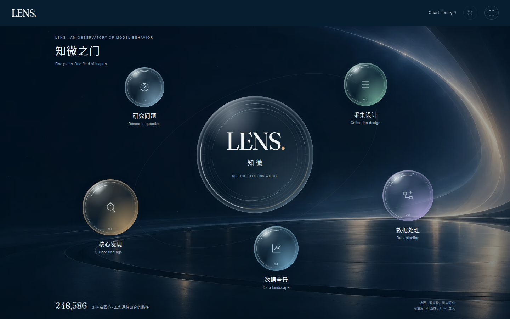
Generated reference After · real browser
After · real browser
原生玻璃球体层次较软；选中A稿与五个独立生成资产带来清楚边缘、体积和色彩区分，暗背景保留标签重心。中央遮罩让原生品牌清晰。
deck-gateway · mobile84.7 → ref 94.15 → 93.0 · fidelity 91.3 · improved原生玻璃球体层次较软；选中A稿与五个独立生成资产带来清楚边缘、体积和色彩区分，暗背景保留标签重心。中央遮罩让原生品牌清晰。
deck-question · desktop90.15 → ref 89.95 → 90.8 · fidelity 90.8 · kept_with_reason原深蓝问题页的衬线大标题、右侧轨迹和底部总量已经形成明确层级。生成A稿未带来至少5分提升；保留原构图，仅统一眉题和图标外围。
deck-question · mobile88.72 → ref 88.52 → 89.38 · fidelity 90.8 · kept_with_reason原深蓝问题页的衬线大标题、右侧轨迹和底部总量已经形成明确层级。生成A稿未带来至少5分提升；保留原构图，仅统一眉题和图标外围。手机保持原生图形尺寸与纵向阅读，首屏信息密度高于桌面。
deck-collection · desktop88.75 → ref 89.95 → 89.95 · fidelity 90.8 · kept_with_reasonBefore · real browserGenerated referenceAfter · real browser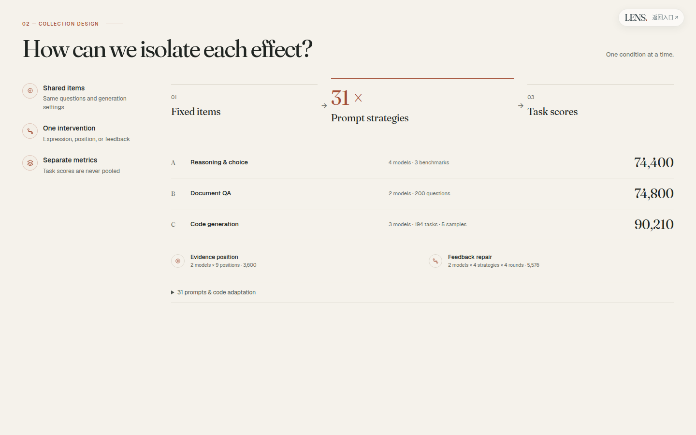
原三列设计因果链与真实数量排列紧凑而易读。A稿的分组变化收益有限且改变细节文字，保留原版结构；只统一眉题和说明展开态。
deck-collection · mobile87.33 → ref 88.52 → 88.53 · fidelity 90.8 · kept_with_reason原三列设计因果链与真实数量排列紧凑而易读。A稿的分组变化收益有限且改变细节文字，保留原版结构；只统一眉题和说明展开态。手机保持原生图形尺寸与纵向阅读，首屏信息密度高于桌面。
deck-cleaning · desktop88.4 → ref 89.65 → 89.4 · fidelity 90.8 · kept_with_reasonBefore · real browser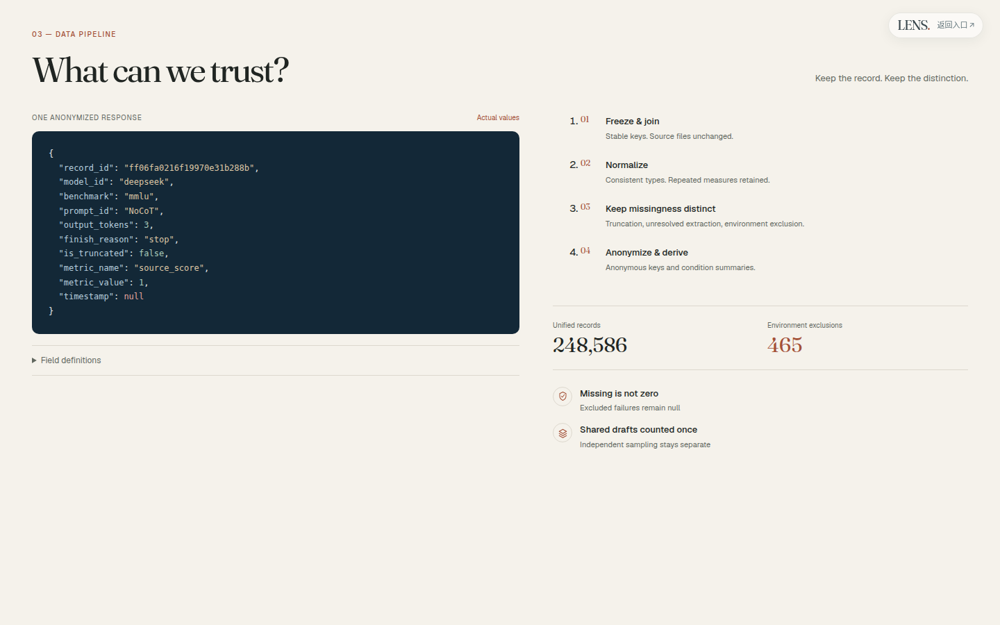
Generated referenceAfter · real browser
原代码样例与四步处理、总量和排除统计分区清楚。A稿并未显著超过原版；保留真实字段和双栏/手机堆叠，仅补外框层次。
deck-cleaning · mobile86.97 → ref 88.22 → 87.97 · fidelity 90.8 · kept_with_reasonBefore · real browserGenerated referenceAfter · real browser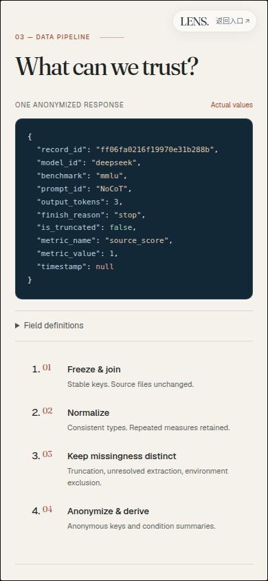
原代码样例与四步处理、总量和排除统计分区清楚。A稿并未显著超过原版；保留真实字段和双栏/手机堆叠，仅补外框层次。手机保持原生图形尺寸与纵向阅读，首屏信息密度高于桌面。
landscape-reasoning-deepseek-curve · desktop87.0 → ref 86.95 → 87.75 · fidelity 90.8 · kept_with_reason原曲线/矩阵、方向与模型切换已紧凑完整。生成稿引入不存在的控件和字段；其美观收益不足5分，保留原布局和原科学图形。 本行实际条件：direction=reasoning；model=deepseek；view=curve。
landscape-reasoning-deepseek-curve · mobile84.85 → ref 84.8 → 85.6 · fidelity 90.8 · kept_with_reasonBefore · real browserGenerated referenceAfter · real browser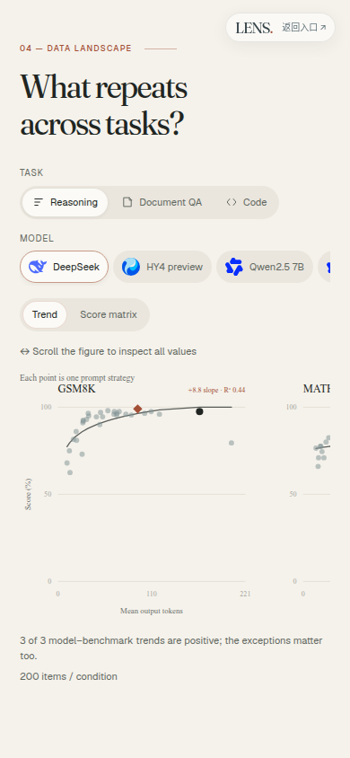
原曲线/矩阵、方向与模型切换已紧凑完整。生成稿引入不存在的控件和字段；其美观收益不足5分，保留原布局和原科学图形。手机保持原生图形尺寸与纵向阅读，首屏信息密度高于桌面。 本行实际条件：direction=reasoning；model=deepseek；view=curve。
landscape-reasoning-deepseek-heatmap · desktop86.78 → ref 86.73 → 87.53 · fidelity 90.8 · kept_with_reasonBefore · real browser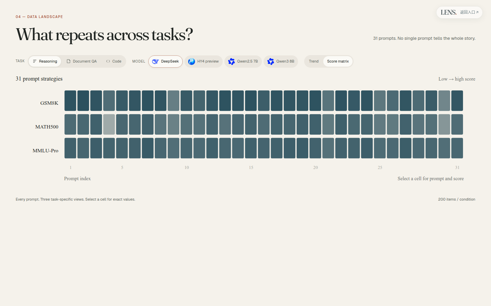
Generated referenceAfter · real browser 原曲线/矩阵、方向与模型切换已紧凑完整。生成稿引入不存在的控件和字段；其美观收益不足5分，保留原布局和原科学图形。31策略矩阵比趋势图更密集，保留原单元格/键盘选择。 本行实际条件：direction=reasoning；model=deepseek；view=heatmap。
landscape-reasoning-deepseek-heatmap · mobile84.63 → ref 84.58 → 85.38 · fidelity 90.8 · kept_with_reasonBefore · real browserGenerated referenceAfter · real browser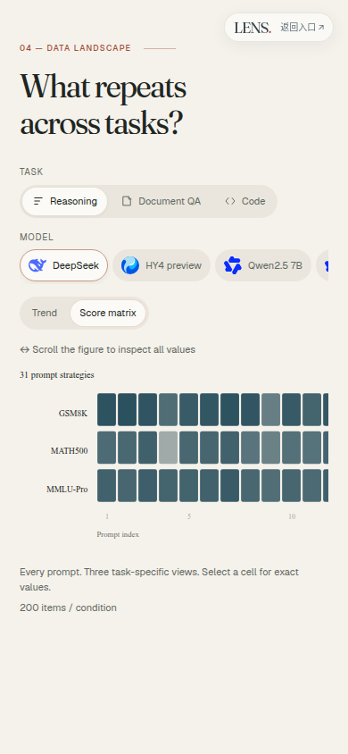
原曲线/矩阵、方向与模型切换已紧凑完整。生成稿引入不存在的控件和字段；其美观收益不足5分，保留原布局和原科学图形。手机保持原生图形尺寸与纵向阅读，首屏信息密度高于桌面。31策略矩阵比趋势图更密集，保留原单元格/键盘选择。 本行实际条件：direction=reasoning；model=deepseek；view=heatmap。
landscape-reasoning-hy4-curve · desktop87.0 → ref 86.95 → 87.75 · fidelity 90.8 · kept_with_reasonBefore · real browserGenerated referenceAfter · real browser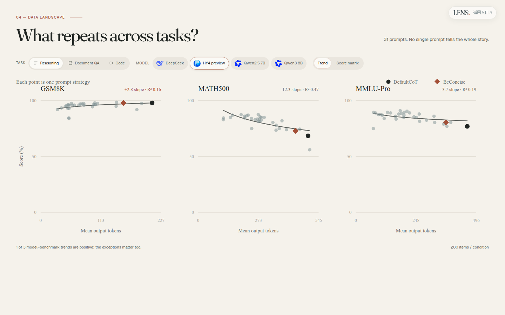
原曲线/矩阵、方向与模型切换已紧凑完整。生成稿引入不存在的控件和字段；其美观收益不足5分，保留原布局和原科学图形。 本行实际条件：direction=reasoning；model=hy4；view=curve。
landscape-reasoning-hy4-curve · mobile84.85 → ref 84.8 → 85.6 · fidelity 90.8 · kept_with_reason原曲线/矩阵、方向与模型切换已紧凑完整。生成稿引入不存在的控件和字段；其美观收益不足5分，保留原布局和原科学图形。手机保持原生图形尺寸与纵向阅读，首屏信息密度高于桌面。 本行实际条件：direction=reasoning；model=hy4；view=curve。
landscape-reasoning-hy4-heatmap · desktop86.78 → ref 86.73 → 87.53 · fidelity 90.8 · kept_with_reasonBefore · real browser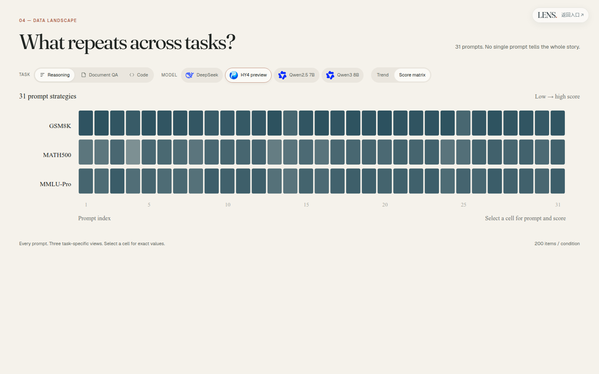
Generated referenceAfter · real browser 原曲线/矩阵、方向与模型切换已紧凑完整。生成稿引入不存在的控件和字段；其美观收益不足5分，保留原布局和原科学图形。31策略矩阵比趋势图更密集，保留原单元格/键盘选择。 本行实际条件：direction=reasoning；model=hy4；view=heatmap。
landscape-reasoning-hy4-heatmap · mobile84.63 → ref 84.58 → 85.38 · fidelity 90.8 · kept_with_reasonBefore · real browserGenerated referenceAfter · real browser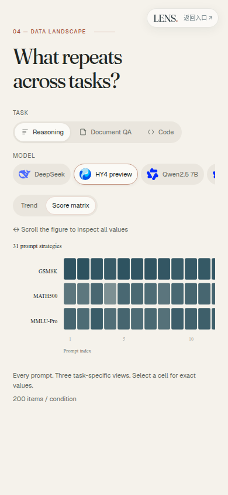
原曲线/矩阵、方向与模型切换已紧凑完整。生成稿引入不存在的控件和字段；其美观收益不足5分，保留原布局和原科学图形。手机保持原生图形尺寸与纵向阅读，首屏信息密度高于桌面。31策略矩阵比趋势图更密集，保留原单元格/键盘选择。 本行实际条件：direction=reasoning；model=hy4；view=heatmap。
landscape-reasoning-qwen-curve · desktop87.0 → ref 86.95 → 87.75 · fidelity 90.8 · kept_with_reasonBefore · real browser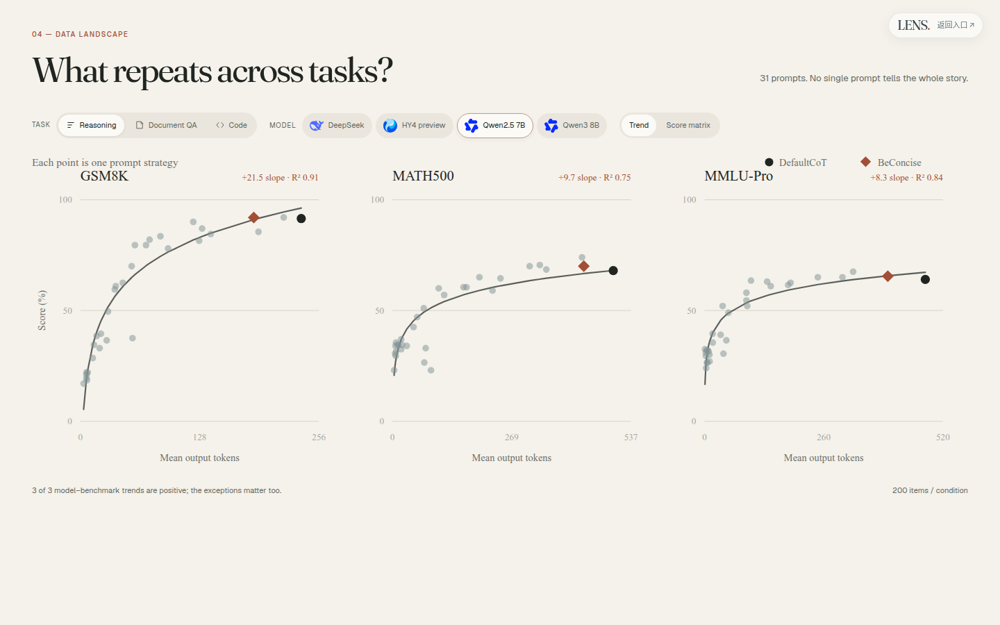
Generated referenceAfter · real browser 原曲线/矩阵、方向与模型切换已紧凑完整。生成稿引入不存在的控件和字段；其美观收益不足5分，保留原布局和原科学图形。 本行实际条件：direction=reasoning；model=qwen；view=curve。
landscape-reasoning-qwen-curve · mobile84.85 → ref 84.8 → 85.6 · fidelity 90.8 · kept_with_reason原曲线/矩阵、方向与模型切换已紧凑完整。生成稿引入不存在的控件和字段；其美观收益不足5分，保留原布局和原科学图形。手机保持原生图形尺寸与纵向阅读，首屏信息密度高于桌面。 本行实际条件：direction=reasoning；model=qwen；view=curve。
landscape-reasoning-qwen-heatmap · desktop86.78 → ref 86.73 → 87.53 · fidelity 90.8 · kept_with_reason原曲线/矩阵、方向与模型切换已紧凑完整。生成稿引入不存在的控件和字段；其美观收益不足5分，保留原布局和原科学图形。31策略矩阵比趋势图更密集，保留原单元格/键盘选择。 本行实际条件：direction=reasoning；model=qwen；view=heatmap。
landscape-reasoning-qwen-heatmap · mobile84.63 → ref 84.58 → 85.38 · fidelity 90.8 · kept_with_reason原曲线/矩阵、方向与模型切换已紧凑完整。生成稿引入不存在的控件和字段；其美观收益不足5分，保留原布局和原科学图形。手机保持原生图形尺寸与纵向阅读，首屏信息密度高于桌面。31策略矩阵比趋势图更密集，保留原单元格/键盘选择。 本行实际条件：direction=reasoning；model=qwen；view=heatmap。
landscape-reasoning-qwen3-curve · desktop87.0 → ref 86.95 → 87.75 · fidelity 90.8 · kept_with_reasonBefore · real browser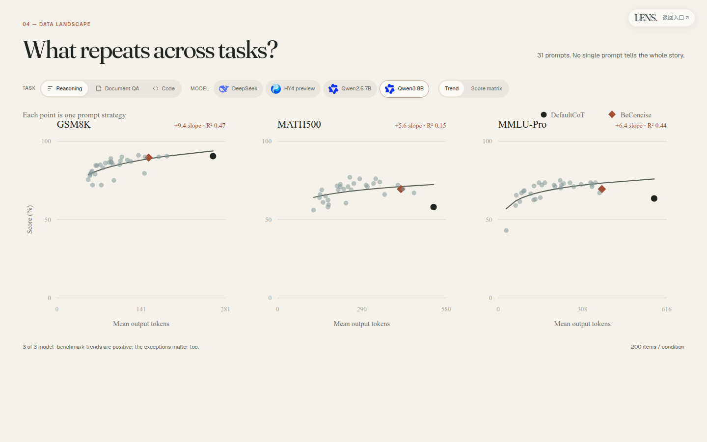
Generated referenceAfter · real browser
原曲线/矩阵、方向与模型切换已紧凑完整。生成稿引入不存在的控件和字段；其美观收益不足5分，保留原布局和原科学图形。 本行实际条件：direction=reasoning；model=qwen3；view=curve。
landscape-reasoning-qwen3-curve · mobile84.85 → ref 84.8 → 85.6 · fidelity 90.8 · kept_with_reasonBefore · real browserGenerated referenceAfter · real browser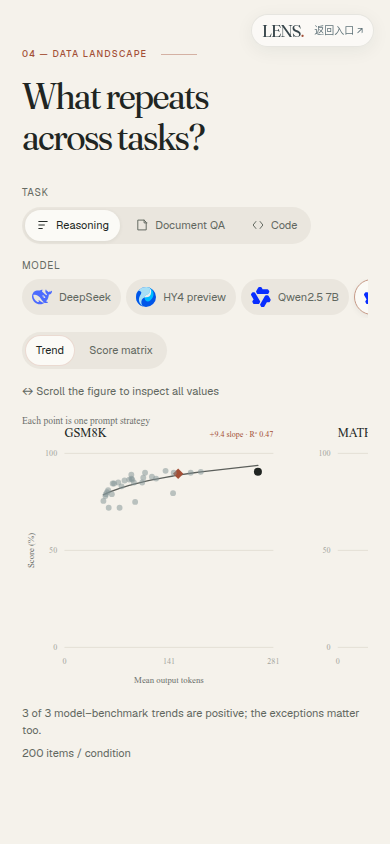
原曲线/矩阵、方向与模型切换已紧凑完整。生成稿引入不存在的控件和字段；其美观收益不足5分，保留原布局和原科学图形。手机保持原生图形尺寸与纵向阅读，首屏信息密度高于桌面。 本行实际条件：direction=reasoning；model=qwen3；view=curve。
landscape-reasoning-qwen3-heatmap · desktop86.78 → ref 86.73 → 87.53 · fidelity 90.8 · kept_with_reasonBefore · real browser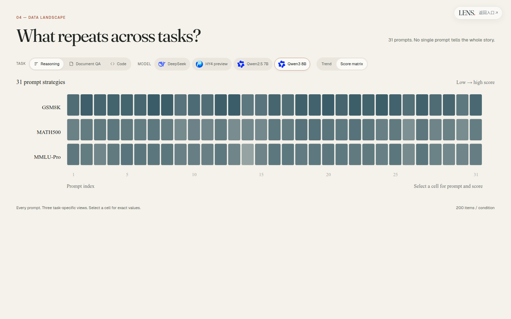
Generated referenceAfter · real browser 原曲线/矩阵、方向与模型切换已紧凑完整。生成稿引入不存在的控件和字段；其美观收益不足5分，保留原布局和原科学图形。31策略矩阵比趋势图更密集，保留原单元格/键盘选择。 本行实际条件：direction=reasoning；model=qwen3；view=heatmap。
landscape-reasoning-qwen3-heatmap · mobile84.63 → ref 84.58 → 85.38 · fidelity 90.8 · kept_with_reasonBefore · real browserGenerated referenceAfter · real browser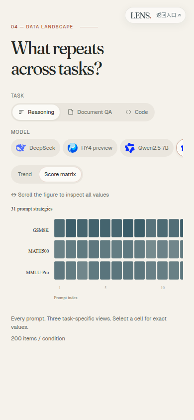
原曲线/矩阵、方向与模型切换已紧凑完整。生成稿引入不存在的控件和字段；其美观收益不足5分，保留原布局和原科学图形。手机保持原生图形尺寸与纵向阅读，首屏信息密度高于桌面。31策略矩阵比趋势图更密集，保留原单元格/键盘选择。 本行实际条件：direction=reasoning；model=qwen3；view=heatmap。
landscape-document_qa-qwen-curve · desktop87.0 → ref 86.95 → 87.75 · fidelity 90.8 · kept_with_reasonBefore · real browserGenerated referenceAfter · real browser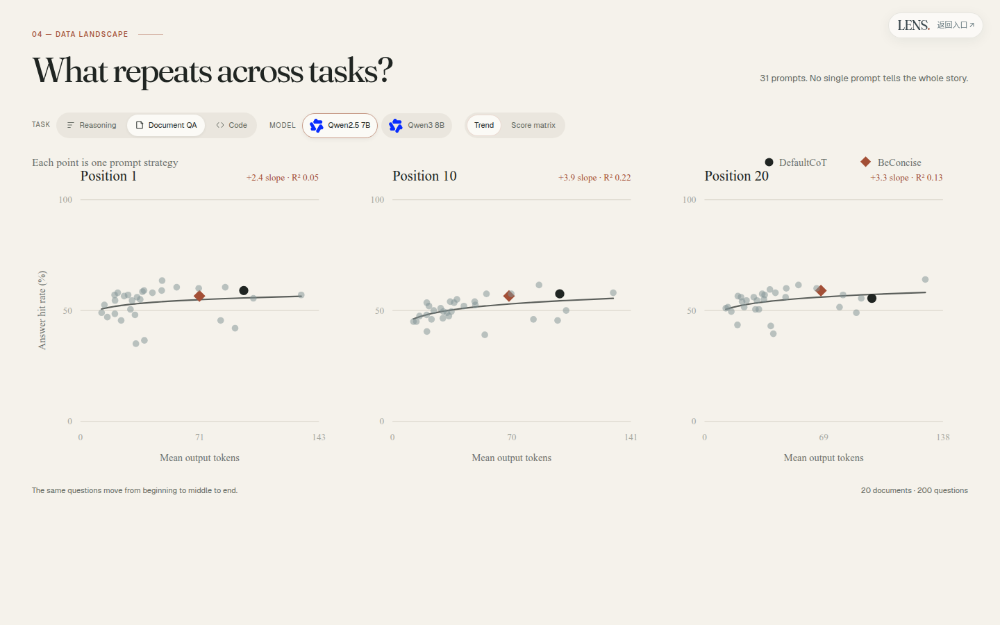
原曲线/矩阵、方向与模型切换已紧凑完整。生成稿引入不存在的控件和字段；其美观收益不足5分，保留原布局和原科学图形。 本行实际条件：direction=document_qa；model=qwen；view=curve。
landscape-document_qa-qwen-curve · mobile84.85 → ref 84.8 → 85.6 · fidelity 90.8 · kept_with_reasonBefore · real browserGenerated referenceAfter · real browser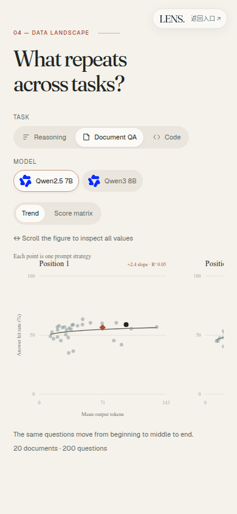
原曲线/矩阵、方向与模型切换已紧凑完整。生成稿引入不存在的控件和字段；其美观收益不足5分，保留原布局和原科学图形。手机保持原生图形尺寸与纵向阅读，首屏信息密度高于桌面。 本行实际条件：direction=document_qa；model=qwen；view=curve。
landscape-document_qa-qwen-heatmap · desktop86.78 → ref 86.73 → 87.53 · fidelity 90.8 · kept_with_reasonBefore · real browserGenerated referenceAfter · real browser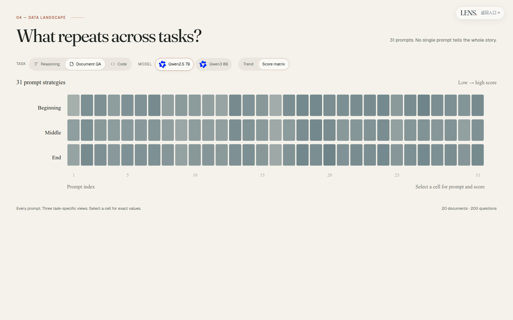
原曲线/矩阵、方向与模型切换已紧凑完整。生成稿引入不存在的控件和字段；其美观收益不足5分，保留原布局和原科学图形。31策略矩阵比趋势图更密集，保留原单元格/键盘选择。 本行实际条件：direction=document_qa；model=qwen；view=heatmap。
landscape-document_qa-qwen-heatmap · mobile84.63 → ref 84.58 → 85.38 · fidelity 90.8 · kept_with_reasonBefore · real browserGenerated referenceAfter · real browser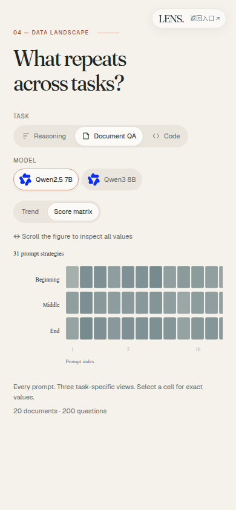
原曲线/矩阵、方向与模型切换已紧凑完整。生成稿引入不存在的控件和字段；其美观收益不足5分，保留原布局和原科学图形。手机保持原生图形尺寸与纵向阅读，首屏信息密度高于桌面。31策略矩阵比趋势图更密集，保留原单元格/键盘选择。 本行实际条件：direction=document_qa；model=qwen；view=heatmap。
landscape-document_qa-qwen3-curve · desktop87.0 → ref 86.95 → 87.75 · fidelity 90.8 · kept_with_reasonBefore · real browser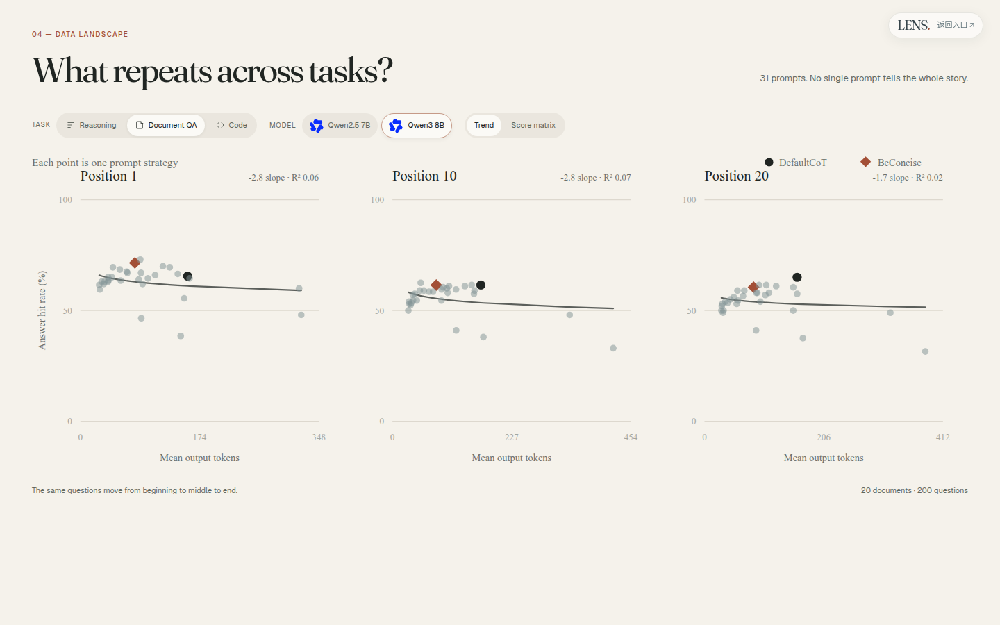
Generated referenceAfter · real browser
原曲线/矩阵、方向与模型切换已紧凑完整。生成稿引入不存在的控件和字段；其美观收益不足5分，保留原布局和原科学图形。 本行实际条件：direction=document_qa；model=qwen3；view=curve。
landscape-document_qa-qwen3-curve · mobile84.85 → ref 84.8 → 85.6 · fidelity 90.8 · kept_with_reasonBefore · real browserGenerated referenceAfter · real browser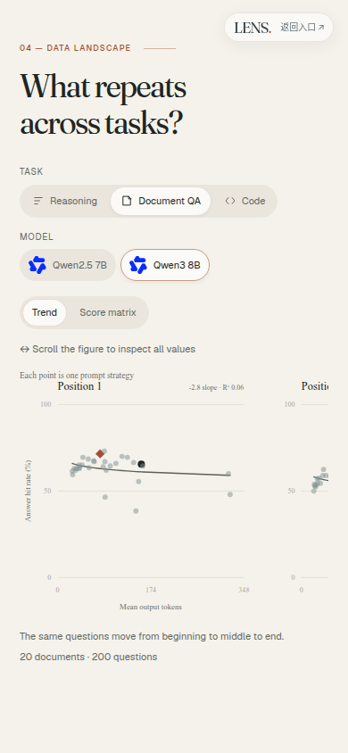
原曲线/矩阵、方向与模型切换已紧凑完整。生成稿引入不存在的控件和字段；其美观收益不足5分，保留原布局和原科学图形。手机保持原生图形尺寸与纵向阅读，首屏信息密度高于桌面。 本行实际条件：direction=document_qa；model=qwen3；view=curve。
landscape-document_qa-qwen3-heatmap · desktop86.78 → ref 86.73 → 87.53 · fidelity 90.8 · kept_with_reasonBefore · real browser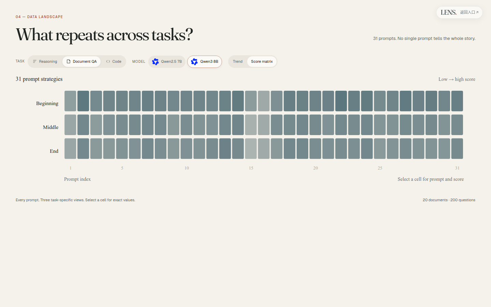
Generated referenceAfter · real browser 原曲线/矩阵、方向与模型切换已紧凑完整。生成稿引入不存在的控件和字段；其美观收益不足5分，保留原布局和原科学图形。31策略矩阵比趋势图更密集，保留原单元格/键盘选择。 本行实际条件：direction=document_qa；model=qwen3；view=heatmap。
landscape-document_qa-qwen3-heatmap · mobile84.63 → ref 84.58 → 85.38 · fidelity 90.8 · kept_with_reasonBefore · real browser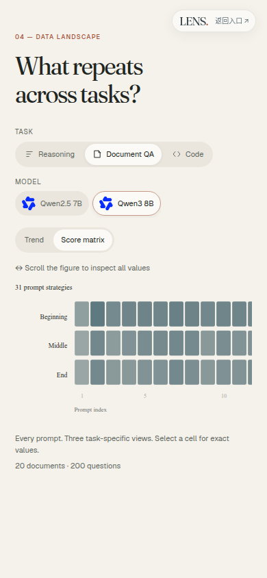
Generated referenceAfter · real browser 原曲线/矩阵、方向与模型切换已紧凑完整。生成稿引入不存在的控件和字段；其美观收益不足5分，保留原布局和原科学图形。手机保持原生图形尺寸与纵向阅读，首屏信息密度高于桌面。31策略矩阵比趋势图更密集，保留原单元格/键盘选择。 本行实际条件：direction=document_qa；model=qwen3；view=heatmap。
landscape-code_generation-deepseek-curve · desktop87.0 → ref 86.95 → 87.75 · fidelity 90.8 · kept_with_reasonBefore · real browser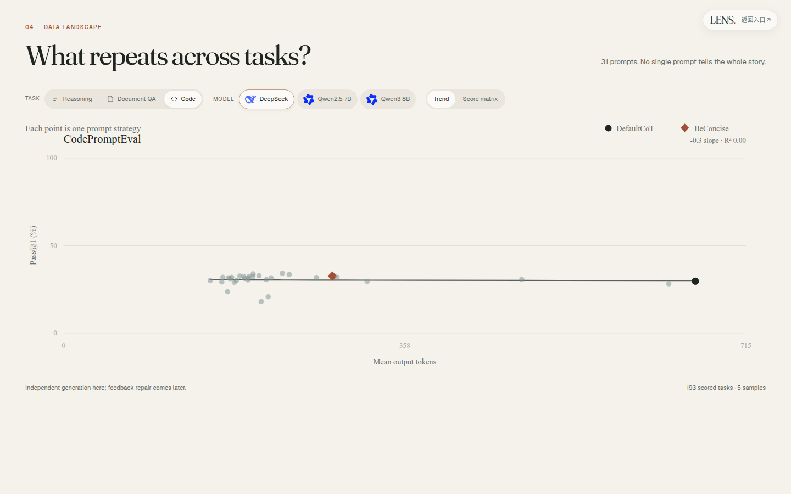
Generated referenceAfter · real browser 原曲线/矩阵、方向与模型切换已紧凑完整。生成稿引入不存在的控件和字段；其美观收益不足5分，保留原布局和原科学图形。 本行实际条件：direction=code_generation；model=deepseek；view=curve。
landscape-code_generation-deepseek-curve · mobile84.85 → ref 84.8 → 85.6 · fidelity 90.8 · kept_with_reasonBefore · real browser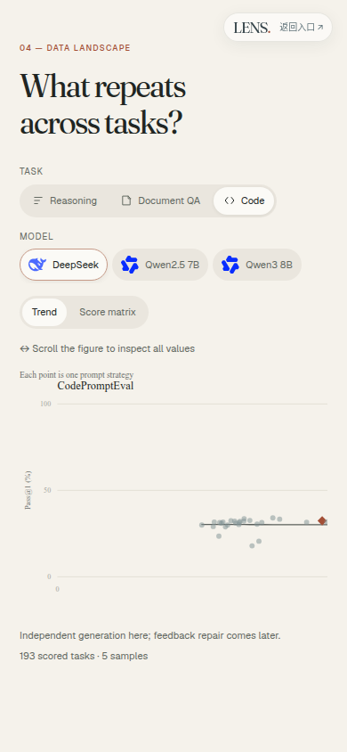
Generated referenceAfter · real browser 原曲线/矩阵、方向与模型切换已紧凑完整。生成稿引入不存在的控件和字段；其美观收益不足5分，保留原布局和原科学图形。手机保持原生图形尺寸与纵向阅读，首屏信息密度高于桌面。 本行实际条件：direction=code_generation；model=deepseek；view=curve。
landscape-code_generation-deepseek-heatmap · desktop86.78 → ref 86.73 → 87.53 · fidelity 90.8 · kept_with_reasonBefore · real browser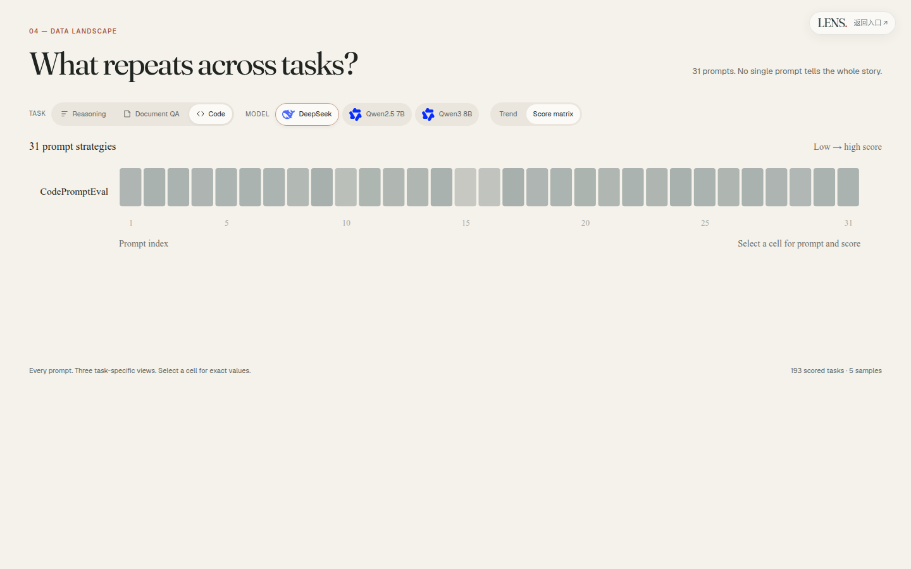
Generated referenceAfter · real browser
原曲线/矩阵、方向与模型切换已紧凑完整。生成稿引入不存在的控件和字段；其美观收益不足5分，保留原布局和原科学图形。31策略矩阵比趋势图更密集，保留原单元格/键盘选择。 本行实际条件：direction=code_generation；model=deepseek；view=heatmap。
landscape-code_generation-deepseek-heatmap · mobile84.63 → ref 84.58 → 85.38 · fidelity 90.8 · kept_with_reasonBefore · real browser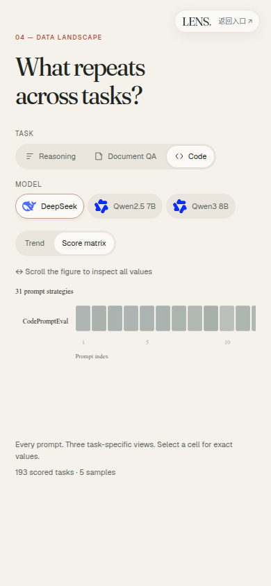
Generated referenceAfter · real browser 原曲线/矩阵、方向与模型切换已紧凑完整。生成稿引入不存在的控件和字段；其美观收益不足5分，保留原布局和原科学图形。手机保持原生图形尺寸与纵向阅读，首屏信息密度高于桌面。31策略矩阵比趋势图更密集，保留原单元格/键盘选择。 本行实际条件：direction=code_generation；model=deepseek；view=heatmap。
landscape-code_generation-qwen-curve · desktop87.0 → ref 86.95 → 87.75 · fidelity 90.8 · kept_with_reason原曲线/矩阵、方向与模型切换已紧凑完整。生成稿引入不存在的控件和字段；其美观收益不足5分，保留原布局和原科学图形。 本行实际条件：direction=code_generation；model=qwen；view=curve。
landscape-code_generation-qwen-curve · mobile84.85 → ref 84.8 → 85.6 · fidelity 90.8 · kept_with_reason原曲线/矩阵、方向与模型切换已紧凑完整。生成稿引入不存在的控件和字段；其美观收益不足5分，保留原布局和原科学图形。手机保持原生图形尺寸与纵向阅读，首屏信息密度高于桌面。 本行实际条件：direction=code_generation；model=qwen；view=curve。
landscape-code_generation-qwen-heatmap · desktop86.78 → ref 86.73 → 87.53 · fidelity 90.8 · kept_with_reasonBefore · real browserGenerated referenceAfter · real browser 原曲线/矩阵、方向与模型切换已紧凑完整。生成稿引入不存在的控件和字段；其美观收益不足5分，保留原布局和原科学图形。31策略矩阵比趋势图更密集，保留原单元格/键盘选择。 本行实际条件：direction=code_generation；model=qwen；view=heatmap。
landscape-code_generation-qwen-heatmap · mobile84.63 → ref 84.58 → 85.38 · fidelity 90.8 · kept_with_reasonBefore · real browserGenerated referenceAfter · real browser 原曲线/矩阵、方向与模型切换已紧凑完整。生成稿引入不存在的控件和字段；其美观收益不足5分，保留原布局和原科学图形。手机保持原生图形尺寸与纵向阅读，首屏信息密度高于桌面。31策略矩阵比趋势图更密集，保留原单元格/键盘选择。 本行实际条件：direction=code_generation；model=qwen；view=heatmap。
landscape-code_generation-qwen3-curve · desktop87.0 → ref 86.95 → 87.75 · fidelity 90.8 · kept_with_reasonBefore · real browserGenerated referenceAfter · real browser
原曲线/矩阵、方向与模型切换已紧凑完整。生成稿引入不存在的控件和字段；其美观收益不足5分，保留原布局和原科学图形。 本行实际条件：direction=code_generation；model=qwen3；view=curve。
landscape-code_generation-qwen3-curve · mobile84.85 → ref 84.8 → 85.6 · fidelity 90.8 · kept_with_reasonBefore · real browserGenerated referenceAfter · real browser 原曲线/矩阵、方向与模型切换已紧凑完整。生成稿引入不存在的控件和字段；其美观收益不足5分，保留原布局和原科学图形。手机保持原生图形尺寸与纵向阅读，首屏信息密度高于桌面。 本行实际条件：direction=code_generation；model=qwen3；view=curve。
landscape-code_generation-qwen3-heatmap · desktop86.78 → ref 86.73 → 87.53 · fidelity 90.8 · kept_with_reasonBefore · real browserGenerated referenceAfter · real browser
原曲线/矩阵、方向与模型切换已紧凑完整。生成稿引入不存在的控件和字段；其美观收益不足5分，保留原布局和原科学图形。31策略矩阵比趋势图更密集，保留原单元格/键盘选择。 本行实际条件：direction=code_generation；model=qwen3；view=heatmap。
landscape-code_generation-qwen3-heatmap · mobile84.63 → ref 84.58 → 85.38 · fidelity 90.8 · kept_with_reasonBefore · real browserGenerated referenceAfter · real browser 原曲线/矩阵、方向与模型切换已紧凑完整。生成稿引入不存在的控件和字段；其美观收益不足5分，保留原布局和原科学图形。手机保持原生图形尺寸与纵向阅读，首屏信息密度高于桌面。31策略矩阵比趋势图更密集，保留原单元格/键盘选择。 本行实际条件：direction=code_generation；model=qwen3；view=heatmap。
story-concise-baseline · desktop88.45 → ref 86.45 → 89.2 · fidelity 90.8 · kept_with_reasonBefore · real browserGenerated referenceAfter · real browser 原章节、条件、证据、图形与原始案例顺序清楚。A稿省略或改写标题和控件，不能作为结构替代；保留原布局，仅统一外围眉题/焦点。 本行实际条件：view=baseline；finding=concise。
story-concise-baseline · mobile86.3 → ref 84.3 → 87.05 · fidelity 90.8 · kept_with_reasonBefore · real browserGenerated referenceAfter · real browser 原章节、条件、证据、图形与原始案例顺序清楚。A稿省略或改写标题和控件，不能作为结构替代；保留原布局，仅统一外围眉题/焦点。手机保持原生图形尺寸与纵向阅读，首屏信息密度高于桌面。 本行实际条件：view=baseline；finding=concise。
story-concise-cross · desktop88.45 → ref 86.45 → 89.2 · fidelity 90.8 · kept_with_reasonBefore · real browserGenerated referenceAfter · real browser 原章节、条件、证据、图形与原始案例顺序清楚。A稿省略或改写标题和控件，不能作为结构替代；保留原布局，仅统一外围眉题/焦点。 本行实际条件：view=cross；finding=concise。
story-concise-cross · mobile86.3 → ref 84.3 → 87.05 · fidelity 90.8 · kept_with_reasonBefore · real browserGenerated referenceAfter · real browser 原章节、条件、证据、图形与原始案例顺序清楚。A稿省略或改写标题和控件，不能作为结构替代；保留原布局，仅统一外围眉题/焦点。手机保持原生图形尺寸与纵向阅读，首屏信息密度高于桌面。 本行实际条件：view=cross；finding=concise。
story-language-math500 · desktop88.45 → ref 86.45 → 89.2 · fidelity 90.8 · kept_with_reasonBefore · real browserGenerated referenceAfter · real browser
原章节、条件、证据、图形与原始案例顺序清楚。A稿省略或改写标题和控件，不能作为结构替代；保留原布局，仅统一外围眉题/焦点。 本行实际条件：task=math500；finding=language。
story-language-math500 · mobile86.3 → ref 84.3 → 87.05 · fidelity 90.8 · kept_with_reasonBefore · real browserGenerated referenceAfter · real browser 原章节、条件、证据、图形与原始案例顺序清楚。A稿省略或改写标题和控件，不能作为结构替代；保留原布局，仅统一外围眉题/焦点。手机保持原生图形尺寸与纵向阅读，首屏信息密度高于桌面。 本行实际条件：task=math500；finding=language。
story-language-gsm8k · desktop88.45 → ref 86.45 → 89.2 · fidelity 90.8 · kept_with_reasonBefore · real browserGenerated referenceAfter · real browser
原章节、条件、证据、图形与原始案例顺序清楚。A稿省略或改写标题和控件，不能作为结构替代；保留原布局，仅统一外围眉题/焦点。 本行实际条件：task=gsm8k；finding=language。
story-language-gsm8k · mobile86.3 → ref 84.3 → 87.05 · fidelity 90.8 · kept_with_reasonBefore · real browserGenerated referenceAfter · real browser 原章节、条件、证据、图形与原始案例顺序清楚。A稿省略或改写标题和控件，不能作为结构替代；保留原布局，仅统一外围眉题/焦点。手机保持原生图形尺寸与纵向阅读，首屏信息密度高于桌面。 本行实际条件：task=gsm8k；finding=language。
story-language-mmlu · desktop88.25 → ref 86.25 → 89.0 · fidelity 90.8 · kept_with_reasonBefore · real browserGenerated referenceAfter · real browser
原章节、条件、证据、图形与原始案例顺序清楚。A稿省略或改写标题和控件，不能作为结构替代；保留原布局，仅统一外围眉题/焦点。长结论标题按原版换行。 本行实际条件：task=mmlu；finding=language。
story-language-mmlu · mobile86.1 → ref 84.1 → 86.85 · fidelity 90.8 · kept_with_reasonBefore · real browserGenerated referenceAfter · real browser 原章节、条件、证据、图形与原始案例顺序清楚。A稿省略或改写标题和控件，不能作为结构替代；保留原布局，仅统一外围眉题/焦点。手机保持原生图形尺寸与纵向阅读，首屏信息密度高于桌面。长结论标题按原版换行。 本行实际条件：task=mmlu；finding=language。
story-limits-deepseek-math500-WordLimit · desktop87.97 → ref 85.98 → 88.73 · fidelity 90.8 · kept_with_reasonBefore · real browserGenerated referenceAfter · real browser 原章节、条件、证据、图形与原始案例顺序清楚。A稿省略或改写标题和控件，不能作为结构替代；保留原布局，仅统一外围眉题/焦点。模型、基准、限长三组条件叠加；原横向图形与全部条件保持。 本行实际条件：model=deepseek；task=math500；limit=WordLimit；finding=limits。
story-limits-deepseek-math500-WordLimit · mobile85.83 → ref 83.83 → 86.58 · fidelity 90.8 · kept_with_reasonBefore · real browserGenerated referenceAfter · real browser 原章节、条件、证据、图形与原始案例顺序清楚。A稿省略或改写标题和控件，不能作为结构替代；保留原布局，仅统一外围眉题/焦点。手机保持原生图形尺寸与纵向阅读，首屏信息密度高于桌面。模型、基准、限长三组条件叠加；原横向图形与全部条件保持。 本行实际条件：model=deepseek；task=math500；limit=WordLimit；finding=limits。
story-limits-deepseek-math500-CharLimit · desktop87.97 → ref 85.98 → 88.73 · fidelity 90.8 · kept_with_reasonBefore · real browserGenerated referenceAfter · real browser 原章节、条件、证据、图形与原始案例顺序清楚。A稿省略或改写标题和控件，不能作为结构替代；保留原布局，仅统一外围眉题/焦点。模型、基准、限长三组条件叠加；原横向图形与全部条件保持。 本行实际条件：model=deepseek；task=math500；limit=CharLimit；finding=limits。
story-limits-deepseek-math500-CharLimit · mobile85.83 → ref 83.83 → 86.58 · fidelity 90.8 · kept_with_reasonBefore · real browserGenerated referenceAfter · real browser 原章节、条件、证据、图形与原始案例顺序清楚。A稿省略或改写标题和控件，不能作为结构替代；保留原布局，仅统一外围眉题/焦点。手机保持原生图形尺寸与纵向阅读，首屏信息密度高于桌面。模型、基准、限长三组条件叠加；原横向图形与全部条件保持。 本行实际条件：model=deepseek；task=math500；limit=CharLimit；finding=limits。
story-limits-deepseek-math500-TokenLimit · desktop88.08 → ref 86.08 → 88.83 · fidelity 90.8 · kept_with_reasonBefore · real browserGenerated referenceAfter · real browser
原章节、条件、证据、图形与原始案例顺序清楚。A稿省略或改写标题和控件，不能作为结构替代；保留原布局，仅统一外围眉题/焦点。模型、基准、限长三组条件叠加；原横向图形与全部条件保持。TokenLimit标题与请求单位更直接。 本行实际条件：model=deepseek；task=math500；limit=TokenLimit；finding=limits。
story-limits-deepseek-math500-TokenLimit · mobile85.93 → ref 83.92 → 86.68 · fidelity 90.8 · kept_with_reasonBefore · real browserGenerated referenceAfter · real browser 原章节、条件、证据、图形与原始案例顺序清楚。A稿省略或改写标题和控件，不能作为结构替代；保留原布局，仅统一外围眉题/焦点。手机保持原生图形尺寸与纵向阅读，首屏信息密度高于桌面。模型、基准、限长三组条件叠加；原横向图形与全部条件保持。TokenLimit标题与请求单位更直接。 本行实际条件：model=deepseek；task=math500；limit=TokenLimit；finding=limits。
story-limits-deepseek-gsm8k-WordLimit · desktop87.97 → ref 85.98 → 88.73 · fidelity 90.8 · kept_with_reasonBefore · real browserGenerated referenceAfter · real browser 原章节、条件、证据、图形与原始案例顺序清楚。A稿省略或改写标题和控件，不能作为结构替代；保留原布局，仅统一外围眉题/焦点。模型、基准、限长三组条件叠加；原横向图形与全部条件保持。 本行实际条件：model=deepseek；task=gsm8k；limit=WordLimit；finding=limits。
story-limits-deepseek-gsm8k-WordLimit · mobile85.83 → ref 83.83 → 86.58 · fidelity 90.8 · kept_with_reasonBefore · real browserGenerated referenceAfter · real browser 原章节、条件、证据、图形与原始案例顺序清楚。A稿省略或改写标题和控件，不能作为结构替代；保留原布局，仅统一外围眉题/焦点。手机保持原生图形尺寸与纵向阅读，首屏信息密度高于桌面。模型、基准、限长三组条件叠加；原横向图形与全部条件保持。 本行实际条件：model=deepseek；task=gsm8k；limit=WordLimit；finding=limits。
story-limits-deepseek-gsm8k-CharLimit · desktop87.97 → ref 85.98 → 88.73 · fidelity 90.8 · kept_with_reasonBefore · real browserGenerated referenceAfter · real browser 原章节、条件、证据、图形与原始案例顺序清楚。A稿省略或改写标题和控件，不能作为结构替代；保留原布局，仅统一外围眉题/焦点。模型、基准、限长三组条件叠加；原横向图形与全部条件保持。 本行实际条件：model=deepseek；task=gsm8k；limit=CharLimit；finding=limits。
story-limits-deepseek-gsm8k-CharLimit · mobile85.83 → ref 83.83 → 86.58 · fidelity 90.8 · kept_with_reasonBefore · real browserGenerated referenceAfter · real browser 原章节、条件、证据、图形与原始案例顺序清楚。A稿省略或改写标题和控件，不能作为结构替代；保留原布局，仅统一外围眉题/焦点。手机保持原生图形尺寸与纵向阅读，首屏信息密度高于桌面。模型、基准、限长三组条件叠加；原横向图形与全部条件保持。 本行实际条件：model=deepseek；task=gsm8k；limit=CharLimit；finding=limits。
story-limits-deepseek-gsm8k-TokenLimit · desktop88.08 → ref 86.08 → 88.83 · fidelity 90.8 · kept_with_reasonBefore · real browserGenerated referenceAfter · real browser
原章节、条件、证据、图形与原始案例顺序清楚。A稿省略或改写标题和控件，不能作为结构替代；保留原布局，仅统一外围眉题/焦点。模型、基准、限长三组条件叠加；原横向图形与全部条件保持。TokenLimit标题与请求单位更直接。 本行实际条件：model=deepseek；task=gsm8k；limit=TokenLimit；finding=limits。
story-limits-deepseek-gsm8k-TokenLimit · mobile85.93 → ref 83.92 → 86.68 · fidelity 90.8 · kept_with_reasonBefore · real browserGenerated referenceAfter · real browser 原章节、条件、证据、图形与原始案例顺序清楚。A稿省略或改写标题和控件，不能作为结构替代；保留原布局，仅统一外围眉题/焦点。手机保持原生图形尺寸与纵向阅读，首屏信息密度高于桌面。模型、基准、限长三组条件叠加；原横向图形与全部条件保持。TokenLimit标题与请求单位更直接。 本行实际条件：model=deepseek；task=gsm8k；limit=TokenLimit；finding=limits。
story-limits-deepseek-mmlu-WordLimit · desktop87.9 → ref 85.9 → 88.65 · fidelity 90.8 · kept_with_reasonBefore · real browserGenerated referenceAfter · real browser 原章节、条件、证据、图形与原始案例顺序清楚。A稿省略或改写标题和控件，不能作为结构替代；保留原布局，仅统一外围眉题/焦点。模型、基准、限长三组条件叠加；原横向图形与全部条件保持。MMLU-Pro条件文字较长，手机仍按原样换行。 本行实际条件：model=deepseek；task=mmlu；limit=WordLimit；finding=limits。
story-limits-deepseek-mmlu-WordLimit · mobile85.75 → ref 83.75 → 86.5 · fidelity 90.8 · kept_with_reasonBefore · real browserGenerated referenceAfter · real browser 原章节、条件、证据、图形与原始案例顺序清楚。A稿省略或改写标题和控件，不能作为结构替代；保留原布局，仅统一外围眉题/焦点。手机保持原生图形尺寸与纵向阅读，首屏信息密度高于桌面。模型、基准、限长三组条件叠加；原横向图形与全部条件保持。MMLU-Pro条件文字较长，手机仍按原样换行。 本行实际条件：model=deepseek；task=mmlu；limit=WordLimit；finding=limits。
story-limits-deepseek-mmlu-CharLimit · desktop87.9 → ref 85.9 → 88.65 · fidelity 90.8 · kept_with_reasonBefore · real browserGenerated referenceAfter · real browser 原章节、条件、证据、图形与原始案例顺序清楚。A稿省略或改写标题和控件，不能作为结构替代；保留原布局，仅统一外围眉题/焦点。模型、基准、限长三组条件叠加；原横向图形与全部条件保持。MMLU-Pro条件文字较长，手机仍按原样换行。 本行实际条件：model=deepseek；task=mmlu；limit=CharLimit；finding=limits。
story-limits-deepseek-mmlu-CharLimit · mobile85.75 → ref 83.75 → 86.5 · fidelity 90.8 · kept_with_reasonBefore · real browserGenerated referenceAfter · real browser 原章节、条件、证据、图形与原始案例顺序清楚。A稿省略或改写标题和控件，不能作为结构替代；保留原布局，仅统一外围眉题/焦点。手机保持原生图形尺寸与纵向阅读，首屏信息密度高于桌面。模型、基准、限长三组条件叠加；原横向图形与全部条件保持。MMLU-Pro条件文字较长，手机仍按原样换行。 本行实际条件：model=deepseek；task=mmlu；limit=CharLimit；finding=limits。
story-limits-deepseek-mmlu-TokenLimit · desktop88.0 → ref 86.0 → 88.75 · fidelity 90.8 · kept_with_reasonBefore · real browserGenerated referenceAfter · real browser
原章节、条件、证据、图形与原始案例顺序清楚。A稿省略或改写标题和控件，不能作为结构替代；保留原布局，仅统一外围眉题/焦点。模型、基准、限长三组条件叠加；原横向图形与全部条件保持。TokenLimit标题与请求单位更直接。MMLU-Pro条件文字较长，手机仍按原样换行。 本行实际条件：model=deepseek；task=mmlu；limit=TokenLimit；finding=limits。
story-limits-deepseek-mmlu-TokenLimit · mobile85.85 → ref 83.85 → 86.6 · fidelity 90.8 · kept_with_reasonBefore · real browserGenerated referenceAfter · real browser 原章节、条件、证据、图形与原始案例顺序清楚。A稿省略或改写标题和控件，不能作为结构替代；保留原布局，仅统一外围眉题/焦点。手机保持原生图形尺寸与纵向阅读，首屏信息密度高于桌面。模型、基准、限长三组条件叠加；原横向图形与全部条件保持。TokenLimit标题与请求单位更直接。MMLU-Pro条件文字较长，手机仍按原样换行。 本行实际条件：model=deepseek；task=mmlu；limit=TokenLimit；finding=limits。
story-limits-hy4-math500-WordLimit · desktop87.97 → ref 85.98 → 88.73 · fidelity 90.8 · kept_with_reasonBefore · real browserGenerated referenceAfter · real browser
原章节、条件、证据、图形与原始案例顺序清楚。A稿省略或改写标题和控件，不能作为结构替代；保留原布局，仅统一外围眉题/焦点。模型、基准、限长三组条件叠加；原横向图形与全部条件保持。 本行实际条件：model=hy4；task=math500；limit=WordLimit；finding=limits。
story-limits-hy4-math500-WordLimit · mobile85.83 → ref 83.83 → 86.58 · fidelity 90.8 · kept_with_reasonBefore · real browserGenerated referenceAfter · real browser 原章节、条件、证据、图形与原始案例顺序清楚。A稿省略或改写标题和控件，不能作为结构替代；保留原布局，仅统一外围眉题/焦点。手机保持原生图形尺寸与纵向阅读，首屏信息密度高于桌面。模型、基准、限长三组条件叠加；原横向图形与全部条件保持。 本行实际条件：model=hy4；task=math500；limit=WordLimit；finding=limits。
story-limits-hy4-math500-CharLimit · desktop87.97 → ref 85.98 → 88.73 · fidelity 90.8 · kept_with_reasonBefore · real browserGenerated referenceAfter · real browser 原章节、条件、证据、图形与原始案例顺序清楚。A稿省略或改写标题和控件，不能作为结构替代；保留原布局，仅统一外围眉题/焦点。模型、基准、限长三组条件叠加；原横向图形与全部条件保持。 本行实际条件：model=hy4；task=math500；limit=CharLimit；finding=limits。
story-limits-hy4-math500-CharLimit · mobile85.83 → ref 83.83 → 86.58 · fidelity 90.8 · kept_with_reasonBefore · real browserGenerated referenceAfter · real browser 原章节、条件、证据、图形与原始案例顺序清楚。A稿省略或改写标题和控件，不能作为结构替代；保留原布局，仅统一外围眉题/焦点。手机保持原生图形尺寸与纵向阅读，首屏信息密度高于桌面。模型、基准、限长三组条件叠加；原横向图形与全部条件保持。 本行实际条件：model=hy4；task=math500；limit=CharLimit；finding=limits。
story-limits-hy4-math500-TokenLimit · desktop88.08 → ref 86.08 → 88.83 · fidelity 90.8 · kept_with_reasonBefore · real browserGenerated referenceAfter · real browser
原章节、条件、证据、图形与原始案例顺序清楚。A稿省略或改写标题和控件，不能作为结构替代；保留原布局，仅统一外围眉题/焦点。模型、基准、限长三组条件叠加；原横向图形与全部条件保持。TokenLimit标题与请求单位更直接。 本行实际条件：model=hy4；task=math500；limit=TokenLimit；finding=limits。
story-limits-hy4-math500-TokenLimit · mobile85.93 → ref 83.92 → 86.68 · fidelity 90.8 · kept_with_reasonBefore · real browserGenerated referenceAfter · real browser 原章节、条件、证据、图形与原始案例顺序清楚。A稿省略或改写标题和控件，不能作为结构替代；保留原布局，仅统一外围眉题/焦点。手机保持原生图形尺寸与纵向阅读，首屏信息密度高于桌面。模型、基准、限长三组条件叠加；原横向图形与全部条件保持。TokenLimit标题与请求单位更直接。 本行实际条件：model=hy4；task=math500；limit=TokenLimit；finding=limits。
story-limits-hy4-gsm8k-WordLimit · desktop87.97 → ref 85.98 → 88.73 · fidelity 90.8 · kept_with_reasonBefore · real browserGenerated referenceAfter · real browser
原章节、条件、证据、图形与原始案例顺序清楚。A稿省略或改写标题和控件，不能作为结构替代；保留原布局，仅统一外围眉题/焦点。模型、基准、限长三组条件叠加；原横向图形与全部条件保持。 本行实际条件：model=hy4；task=gsm8k；limit=WordLimit；finding=limits。
story-limits-hy4-gsm8k-WordLimit · mobile85.83 → ref 83.83 → 86.58 · fidelity 90.8 · kept_with_reasonBefore · real browserGenerated referenceAfter · real browser 原章节、条件、证据、图形与原始案例顺序清楚。A稿省略或改写标题和控件，不能作为结构替代；保留原布局，仅统一外围眉题/焦点。手机保持原生图形尺寸与纵向阅读，首屏信息密度高于桌面。模型、基准、限长三组条件叠加；原横向图形与全部条件保持。 本行实际条件：model=hy4；task=gsm8k；limit=WordLimit；finding=limits。
story-limits-hy4-gsm8k-CharLimit · desktop87.97 → ref 85.98 → 88.73 · fidelity 90.8 · kept_with_reasonBefore · real browserGenerated referenceAfter · real browser 原章节、条件、证据、图形与原始案例顺序清楚。A稿省略或改写标题和控件，不能作为结构替代；保留原布局，仅统一外围眉题/焦点。模型、基准、限长三组条件叠加；原横向图形与全部条件保持。 本行实际条件：model=hy4；task=gsm8k；limit=CharLimit；finding=limits。
story-limits-hy4-gsm8k-CharLimit · mobile85.83 → ref 83.83 → 86.58 · fidelity 90.8 · kept_with_reasonBefore · real browserGenerated referenceAfter · real browser 原章节、条件、证据、图形与原始案例顺序清楚。A稿省略或改写标题和控件，不能作为结构替代；保留原布局，仅统一外围眉题/焦点。手机保持原生图形尺寸与纵向阅读，首屏信息密度高于桌面。模型、基准、限长三组条件叠加；原横向图形与全部条件保持。 本行实际条件：model=hy4；task=gsm8k；limit=CharLimit；finding=limits。
story-limits-hy4-gsm8k-TokenLimit · desktop88.08 → ref 86.08 → 88.83 · fidelity 90.8 · kept_with_reasonBefore · real browserGenerated referenceAfter · real browser 原章节、条件、证据、图形与原始案例顺序清楚。A稿省略或改写标题和控件，不能作为结构替代；保留原布局，仅统一外围眉题/焦点。模型、基准、限长三组条件叠加；原横向图形与全部条件保持。TokenLimit标题与请求单位更直接。 本行实际条件：model=hy4；task=gsm8k；limit=TokenLimit；finding=limits。
story-limits-hy4-gsm8k-TokenLimit · mobile85.93 → ref 83.92 → 86.68 · fidelity 90.8 · kept_with_reasonBefore · real browserGenerated referenceAfter · real browser 原章节、条件、证据、图形与原始案例顺序清楚。A稿省略或改写标题和控件，不能作为结构替代；保留原布局，仅统一外围眉题/焦点。手机保持原生图形尺寸与纵向阅读，首屏信息密度高于桌面。模型、基准、限长三组条件叠加；原横向图形与全部条件保持。TokenLimit标题与请求单位更直接。 本行实际条件：model=hy4；task=gsm8k；limit=TokenLimit；finding=limits。
story-limits-hy4-mmlu-WordLimit · desktop87.9 → ref 85.9 → 88.65 · fidelity 90.8 · kept_with_reasonBefore · real browserGenerated referenceAfter · real browser 原章节、条件、证据、图形与原始案例顺序清楚。A稿省略或改写标题和控件，不能作为结构替代；保留原布局，仅统一外围眉题/焦点。模型、基准、限长三组条件叠加；原横向图形与全部条件保持。MMLU-Pro条件文字较长，手机仍按原样换行。 本行实际条件：model=hy4；task=mmlu；limit=WordLimit；finding=limits。
story-limits-hy4-mmlu-WordLimit · mobile85.75 → ref 83.75 → 86.5 · fidelity 90.8 · kept_with_reasonBefore · real browserGenerated referenceAfter · real browser 原章节、条件、证据、图形与原始案例顺序清楚。A稿省略或改写标题和控件，不能作为结构替代；保留原布局，仅统一外围眉题/焦点。手机保持原生图形尺寸与纵向阅读，首屏信息密度高于桌面。模型、基准、限长三组条件叠加；原横向图形与全部条件保持。MMLU-Pro条件文字较长，手机仍按原样换行。 本行实际条件：model=hy4；task=mmlu；limit=WordLimit；finding=limits。
story-limits-hy4-mmlu-CharLimit · desktop87.9 → ref 85.9 → 88.65 · fidelity 90.8 · kept_with_reasonBefore · real browserGenerated referenceAfter · real browser
原章节、条件、证据、图形与原始案例顺序清楚。A稿省略或改写标题和控件，不能作为结构替代；保留原布局，仅统一外围眉题/焦点。模型、基准、限长三组条件叠加；原横向图形与全部条件保持。MMLU-Pro条件文字较长，手机仍按原样换行。 本行实际条件：model=hy4；task=mmlu；limit=CharLimit；finding=limits。
story-limits-hy4-mmlu-CharLimit · mobile85.75 → ref 83.75 → 86.5 · fidelity 90.8 · kept_with_reasonBefore · real browserGenerated referenceAfter · real browser 原章节、条件、证据、图形与原始案例顺序清楚。A稿省略或改写标题和控件，不能作为结构替代；保留原布局，仅统一外围眉题/焦点。手机保持原生图形尺寸与纵向阅读，首屏信息密度高于桌面。模型、基准、限长三组条件叠加；原横向图形与全部条件保持。MMLU-Pro条件文字较长，手机仍按原样换行。 本行实际条件：model=hy4；task=mmlu；limit=CharLimit；finding=limits。
story-limits-hy4-mmlu-TokenLimit · desktop88.0 → ref 86.0 → 88.75 · fidelity 90.8 · kept_with_reasonBefore · real browserGenerated referenceAfter · real browser
原章节、条件、证据、图形与原始案例顺序清楚。A稿省略或改写标题和控件，不能作为结构替代；保留原布局，仅统一外围眉题/焦点。模型、基准、限长三组条件叠加；原横向图形与全部条件保持。TokenLimit标题与请求单位更直接。MMLU-Pro条件文字较长，手机仍按原样换行。 本行实际条件：model=hy4；task=mmlu；limit=TokenLimit；finding=limits。
story-limits-hy4-mmlu-TokenLimit · mobile85.85 → ref 83.85 → 86.6 · fidelity 90.8 · kept_with_reasonBefore · real browserGenerated referenceAfter · real browser 原章节、条件、证据、图形与原始案例顺序清楚。A稿省略或改写标题和控件，不能作为结构替代；保留原布局，仅统一外围眉题/焦点。手机保持原生图形尺寸与纵向阅读，首屏信息密度高于桌面。模型、基准、限长三组条件叠加；原横向图形与全部条件保持。TokenLimit标题与请求单位更直接。MMLU-Pro条件文字较长，手机仍按原样换行。 本行实际条件：model=hy4；task=mmlu；limit=TokenLimit；finding=limits。
story-limits-qwen-math500-WordLimit · desktop87.97 → ref 85.98 → 88.73 · fidelity 90.8 · kept_with_reasonBefore · real browserGenerated referenceAfter · real browser 原章节、条件、证据、图形与原始案例顺序清楚。A稿省略或改写标题和控件，不能作为结构替代；保留原布局，仅统一外围眉题/焦点。模型、基准、限长三组条件叠加；原横向图形与全部条件保持。 本行实际条件：model=qwen；task=math500；limit=WordLimit；finding=limits。
story-limits-qwen-math500-WordLimit · mobile85.83 → ref 83.83 → 86.58 · fidelity 90.8 · kept_with_reasonBefore · real browserGenerated referenceAfter · real browser 原章节、条件、证据、图形与原始案例顺序清楚。A稿省略或改写标题和控件，不能作为结构替代；保留原布局，仅统一外围眉题/焦点。手机保持原生图形尺寸与纵向阅读，首屏信息密度高于桌面。模型、基准、限长三组条件叠加；原横向图形与全部条件保持。 本行实际条件：model=qwen；task=math500；limit=WordLimit；finding=limits。
story-limits-qwen-math500-CharLimit · desktop87.97 → ref 85.98 → 88.73 · fidelity 90.8 · kept_with_reasonBefore · real browserGenerated referenceAfter · real browser 原章节、条件、证据、图形与原始案例顺序清楚。A稿省略或改写标题和控件，不能作为结构替代；保留原布局，仅统一外围眉题/焦点。模型、基准、限长三组条件叠加；原横向图形与全部条件保持。 本行实际条件：model=qwen；task=math500；limit=CharLimit；finding=limits。
story-limits-qwen-math500-CharLimit · mobile85.83 → ref 83.83 → 86.58 · fidelity 90.8 · kept_with_reasonBefore · real browserGenerated referenceAfter · real browser 原章节、条件、证据、图形与原始案例顺序清楚。A稿省略或改写标题和控件，不能作为结构替代；保留原布局，仅统一外围眉题/焦点。手机保持原生图形尺寸与纵向阅读，首屏信息密度高于桌面。模型、基准、限长三组条件叠加；原横向图形与全部条件保持。 本行实际条件：model=qwen；task=math500；limit=CharLimit；finding=limits。
story-limits-qwen-math500-TokenLimit · desktop88.08 → ref 86.08 → 88.83 · fidelity 90.8 · kept_with_reasonBefore · real browserGenerated referenceAfter · real browser
原章节、条件、证据、图形与原始案例顺序清楚。A稿省略或改写标题和控件，不能作为结构替代；保留原布局，仅统一外围眉题/焦点。模型、基准、限长三组条件叠加；原横向图形与全部条件保持。TokenLimit标题与请求单位更直接。 本行实际条件：model=qwen；task=math500；limit=TokenLimit；finding=limits。
story-limits-qwen-math500-TokenLimit · mobile85.93 → ref 83.92 → 86.68 · fidelity 90.8 · kept_with_reasonBefore · real browserGenerated referenceAfter · real browser 原章节、条件、证据、图形与原始案例顺序清楚。A稿省略或改写标题和控件，不能作为结构替代；保留原布局，仅统一外围眉题/焦点。手机保持原生图形尺寸与纵向阅读，首屏信息密度高于桌面。模型、基准、限长三组条件叠加；原横向图形与全部条件保持。TokenLimit标题与请求单位更直接。 本行实际条件：model=qwen；task=math500；limit=TokenLimit；finding=limits。
story-limits-qwen-gsm8k-WordLimit · desktop87.97 → ref 85.98 → 88.73 · fidelity 90.8 · kept_with_reasonBefore · real browserGenerated referenceAfter · real browser
原章节、条件、证据、图形与原始案例顺序清楚。A稿省略或改写标题和控件，不能作为结构替代；保留原布局，仅统一外围眉题/焦点。模型、基准、限长三组条件叠加；原横向图形与全部条件保持。 本行实际条件：model=qwen；task=gsm8k；limit=WordLimit；finding=limits。
story-limits-qwen-gsm8k-WordLimit · mobile85.83 → ref 83.83 → 86.58 · fidelity 90.8 · kept_with_reasonBefore · real browserGenerated referenceAfter · real browser 原章节、条件、证据、图形与原始案例顺序清楚。A稿省略或改写标题和控件，不能作为结构替代；保留原布局，仅统一外围眉题/焦点。手机保持原生图形尺寸与纵向阅读，首屏信息密度高于桌面。模型、基准、限长三组条件叠加；原横向图形与全部条件保持。 本行实际条件：model=qwen；task=gsm8k；limit=WordLimit；finding=limits。
story-limits-qwen-gsm8k-CharLimit · desktop87.97 → ref 85.98 → 88.73 · fidelity 90.8 · kept_with_reasonBefore · real browserGenerated referenceAfter · real browser
原章节、条件、证据、图形与原始案例顺序清楚。A稿省略或改写标题和控件，不能作为结构替代；保留原布局，仅统一外围眉题/焦点。模型、基准、限长三组条件叠加；原横向图形与全部条件保持。 本行实际条件：model=qwen；task=gsm8k；limit=CharLimit；finding=limits。
story-limits-qwen-gsm8k-CharLimit · mobile85.83 → ref 83.83 → 86.58 · fidelity 90.8 · kept_with_reasonBefore · real browserGenerated referenceAfter · real browser 原章节、条件、证据、图形与原始案例顺序清楚。A稿省略或改写标题和控件，不能作为结构替代；保留原布局，仅统一外围眉题/焦点。手机保持原生图形尺寸与纵向阅读，首屏信息密度高于桌面。模型、基准、限长三组条件叠加；原横向图形与全部条件保持。 本行实际条件：model=qwen；task=gsm8k；limit=CharLimit；finding=limits。
story-limits-qwen-gsm8k-TokenLimit · desktop88.08 → ref 86.08 → 88.83 · fidelity 90.8 · kept_with_reasonBefore · real browserGenerated referenceAfter · real browser
原章节、条件、证据、图形与原始案例顺序清楚。A稿省略或改写标题和控件，不能作为结构替代；保留原布局，仅统一外围眉题/焦点。模型、基准、限长三组条件叠加；原横向图形与全部条件保持。TokenLimit标题与请求单位更直接。 本行实际条件：model=qwen；task=gsm8k；limit=TokenLimit；finding=limits。
story-limits-qwen-gsm8k-TokenLimit · mobile85.93 → ref 83.92 → 86.68 · fidelity 90.8 · kept_with_reasonBefore · real browserGenerated referenceAfter · real browser 原章节、条件、证据、图形与原始案例顺序清楚。A稿省略或改写标题和控件，不能作为结构替代；保留原布局，仅统一外围眉题/焦点。手机保持原生图形尺寸与纵向阅读，首屏信息密度高于桌面。模型、基准、限长三组条件叠加；原横向图形与全部条件保持。TokenLimit标题与请求单位更直接。 本行实际条件：model=qwen；task=gsm8k；limit=TokenLimit；finding=limits。
story-limits-qwen-mmlu-WordLimit · desktop87.9 → ref 85.9 → 88.65 · fidelity 90.8 · kept_with_reasonBefore · real browserGenerated referenceAfter · real browser 原章节、条件、证据、图形与原始案例顺序清楚。A稿省略或改写标题和控件，不能作为结构替代；保留原布局，仅统一外围眉题/焦点。模型、基准、限长三组条件叠加；原横向图形与全部条件保持。MMLU-Pro条件文字较长，手机仍按原样换行。 本行实际条件：model=qwen；task=mmlu；limit=WordLimit；finding=limits。
story-limits-qwen-mmlu-WordLimit · mobile85.75 → ref 83.75 → 86.5 · fidelity 90.8 · kept_with_reasonBefore · real browserGenerated referenceAfter · real browser 原章节、条件、证据、图形与原始案例顺序清楚。A稿省略或改写标题和控件，不能作为结构替代；保留原布局，仅统一外围眉题/焦点。手机保持原生图形尺寸与纵向阅读，首屏信息密度高于桌面。模型、基准、限长三组条件叠加；原横向图形与全部条件保持。MMLU-Pro条件文字较长，手机仍按原样换行。 本行实际条件：model=qwen；task=mmlu；limit=WordLimit；finding=limits。
story-limits-qwen-mmlu-CharLimit · desktop87.9 → ref 85.9 → 88.65 · fidelity 90.8 · kept_with_reasonBefore · real browserGenerated referenceAfter · real browser 原章节、条件、证据、图形与原始案例顺序清楚。A稿省略或改写标题和控件，不能作为结构替代；保留原布局，仅统一外围眉题/焦点。模型、基准、限长三组条件叠加；原横向图形与全部条件保持。MMLU-Pro条件文字较长，手机仍按原样换行。 本行实际条件：model=qwen；task=mmlu；limit=CharLimit；finding=limits。
story-limits-qwen-mmlu-CharLimit · mobile85.75 → ref 83.75 → 86.5 · fidelity 90.8 · kept_with_reasonBefore · real browserGenerated referenceAfter · real browser 原章节、条件、证据、图形与原始案例顺序清楚。A稿省略或改写标题和控件，不能作为结构替代；保留原布局，仅统一外围眉题/焦点。手机保持原生图形尺寸与纵向阅读，首屏信息密度高于桌面。模型、基准、限长三组条件叠加；原横向图形与全部条件保持。MMLU-Pro条件文字较长，手机仍按原样换行。 本行实际条件：model=qwen；task=mmlu；limit=CharLimit；finding=limits。
story-limits-qwen-mmlu-TokenLimit · desktop88.0 → ref 86.0 → 88.75 · fidelity 90.8 · kept_with_reasonBefore · real browserGenerated referenceAfter · real browser
原章节、条件、证据、图形与原始案例顺序清楚。A稿省略或改写标题和控件，不能作为结构替代；保留原布局，仅统一外围眉题/焦点。模型、基准、限长三组条件叠加；原横向图形与全部条件保持。TokenLimit标题与请求单位更直接。MMLU-Pro条件文字较长，手机仍按原样换行。 本行实际条件：model=qwen；task=mmlu；limit=TokenLimit；finding=limits。
story-limits-qwen-mmlu-TokenLimit · mobile85.85 → ref 83.85 → 86.6 · fidelity 90.8 · kept_with_reasonBefore · real browserGenerated referenceAfter · real browser 原章节、条件、证据、图形与原始案例顺序清楚。A稿省略或改写标题和控件，不能作为结构替代；保留原布局，仅统一外围眉题/焦点。手机保持原生图形尺寸与纵向阅读，首屏信息密度高于桌面。模型、基准、限长三组条件叠加；原横向图形与全部条件保持。TokenLimit标题与请求单位更直接。MMLU-Pro条件文字较长，手机仍按原样换行。 本行实际条件：model=qwen；task=mmlu；limit=TokenLimit；finding=limits。
story-limits-qwen3-math500-WordLimit · desktop87.97 → ref 85.98 → 88.73 · fidelity 90.8 · kept_with_reasonBefore · real browserGenerated referenceAfter · real browser
原章节、条件、证据、图形与原始案例顺序清楚。A稿省略或改写标题和控件，不能作为结构替代；保留原布局，仅统一外围眉题/焦点。模型、基准、限长三组条件叠加；原横向图形与全部条件保持。 本行实际条件：model=qwen3；task=math500；limit=WordLimit；finding=limits。
story-limits-qwen3-math500-WordLimit · mobile85.83 → ref 83.83 → 86.58 · fidelity 90.8 · kept_with_reasonBefore · real browserGenerated referenceAfter · real browser 原章节、条件、证据、图形与原始案例顺序清楚。A稿省略或改写标题和控件，不能作为结构替代；保留原布局，仅统一外围眉题/焦点。手机保持原生图形尺寸与纵向阅读，首屏信息密度高于桌面。模型、基准、限长三组条件叠加；原横向图形与全部条件保持。 本行实际条件：model=qwen3；task=math500；limit=WordLimit；finding=limits。
story-limits-qwen3-math500-CharLimit · desktop87.97 → ref 85.98 → 88.73 · fidelity 90.8 · kept_with_reasonBefore · real browserGenerated referenceAfter · real browser 原章节、条件、证据、图形与原始案例顺序清楚。A稿省略或改写标题和控件，不能作为结构替代；保留原布局，仅统一外围眉题/焦点。模型、基准、限长三组条件叠加；原横向图形与全部条件保持。 本行实际条件：model=qwen3；task=math500；limit=CharLimit；finding=limits。
story-limits-qwen3-math500-CharLimit · mobile85.83 → ref 83.83 → 86.58 · fidelity 90.8 · kept_with_reasonBefore · real browserGenerated referenceAfter · real browser 原章节、条件、证据、图形与原始案例顺序清楚。A稿省略或改写标题和控件，不能作为结构替代；保留原布局，仅统一外围眉题/焦点。手机保持原生图形尺寸与纵向阅读，首屏信息密度高于桌面。模型、基准、限长三组条件叠加；原横向图形与全部条件保持。 本行实际条件：model=qwen3；task=math500；limit=CharLimit；finding=limits。
story-limits-qwen3-math500-TokenLimit · desktop88.08 → ref 86.08 → 88.83 · fidelity 90.8 · kept_with_reasonBefore · real browserGenerated referenceAfter · real browser 原章节、条件、证据、图形与原始案例顺序清楚。A稿省略或改写标题和控件，不能作为结构替代；保留原布局，仅统一外围眉题/焦点。模型、基准、限长三组条件叠加；原横向图形与全部条件保持。TokenLimit标题与请求单位更直接。 本行实际条件：model=qwen3；task=math500；limit=TokenLimit；finding=limits。
story-limits-qwen3-math500-TokenLimit · mobile85.93 → ref 83.92 → 86.68 · fidelity 90.8 · kept_with_reasonBefore · real browserGenerated referenceAfter · real browser 原章节、条件、证据、图形与原始案例顺序清楚。A稿省略或改写标题和控件，不能作为结构替代；保留原布局，仅统一外围眉题/焦点。手机保持原生图形尺寸与纵向阅读，首屏信息密度高于桌面。模型、基准、限长三组条件叠加；原横向图形与全部条件保持。TokenLimit标题与请求单位更直接。 本行实际条件：model=qwen3；task=math500；limit=TokenLimit；finding=limits。
story-limits-qwen3-gsm8k-WordLimit · desktop87.97 → ref 85.98 → 88.73 · fidelity 90.8 · kept_with_reasonBefore · real browserGenerated referenceAfter · real browser
原章节、条件、证据、图形与原始案例顺序清楚。A稿省略或改写标题和控件，不能作为结构替代；保留原布局，仅统一外围眉题/焦点。模型、基准、限长三组条件叠加；原横向图形与全部条件保持。 本行实际条件：model=qwen3；task=gsm8k；limit=WordLimit；finding=limits。
story-limits-qwen3-gsm8k-WordLimit · mobile85.83 → ref 83.83 → 86.58 · fidelity 90.8 · kept_with_reasonBefore · real browserGenerated referenceAfter · real browser 原章节、条件、证据、图形与原始案例顺序清楚。A稿省略或改写标题和控件，不能作为结构替代；保留原布局，仅统一外围眉题/焦点。手机保持原生图形尺寸与纵向阅读，首屏信息密度高于桌面。模型、基准、限长三组条件叠加；原横向图形与全部条件保持。 本行实际条件：model=qwen3；task=gsm8k；limit=WordLimit；finding=limits。
story-limits-qwen3-gsm8k-CharLimit · desktop87.97 → ref 85.98 → 88.73 · fidelity 90.8 · kept_with_reasonBefore · real browserGenerated referenceAfter · real browser
原章节、条件、证据、图形与原始案例顺序清楚。A稿省略或改写标题和控件，不能作为结构替代；保留原布局，仅统一外围眉题/焦点。模型、基准、限长三组条件叠加；原横向图形与全部条件保持。 本行实际条件：model=qwen3；task=gsm8k；limit=CharLimit；finding=limits。
story-limits-qwen3-gsm8k-CharLimit · mobile85.83 → ref 83.83 → 86.58 · fidelity 90.8 · kept_with_reasonBefore · real browserGenerated referenceAfter · real browser 原章节、条件、证据、图形与原始案例顺序清楚。A稿省略或改写标题和控件，不能作为结构替代；保留原布局，仅统一外围眉题/焦点。手机保持原生图形尺寸与纵向阅读，首屏信息密度高于桌面。模型、基准、限长三组条件叠加；原横向图形与全部条件保持。 本行实际条件：model=qwen3；task=gsm8k；limit=CharLimit；finding=limits。
story-limits-qwen3-gsm8k-TokenLimit · desktop88.08 → ref 86.08 → 88.83 · fidelity 90.8 · kept_with_reasonBefore · real browserGenerated referenceAfter · real browser
原章节、条件、证据、图形与原始案例顺序清楚。A稿省略或改写标题和控件，不能作为结构替代；保留原布局，仅统一外围眉题/焦点。模型、基准、限长三组条件叠加；原横向图形与全部条件保持。TokenLimit标题与请求单位更直接。 本行实际条件：model=qwen3；task=gsm8k；limit=TokenLimit；finding=limits。
story-limits-qwen3-gsm8k-TokenLimit · mobile85.93 → ref 83.92 → 86.68 · fidelity 90.8 · kept_with_reasonBefore · real browserGenerated referenceAfter · real browser 原章节、条件、证据、图形与原始案例顺序清楚。A稿省略或改写标题和控件，不能作为结构替代；保留原布局，仅统一外围眉题/焦点。手机保持原生图形尺寸与纵向阅读，首屏信息密度高于桌面。模型、基准、限长三组条件叠加；原横向图形与全部条件保持。TokenLimit标题与请求单位更直接。 本行实际条件：model=qwen3；task=gsm8k；limit=TokenLimit；finding=limits。
story-limits-qwen3-mmlu-WordLimit · desktop87.9 → ref 85.9 → 88.65 · fidelity 90.8 · kept_with_reasonBefore · real browserGenerated referenceAfter · real browser 原章节、条件、证据、图形与原始案例顺序清楚。A稿省略或改写标题和控件，不能作为结构替代；保留原布局，仅统一外围眉题/焦点。模型、基准、限长三组条件叠加；原横向图形与全部条件保持。MMLU-Pro条件文字较长，手机仍按原样换行。 本行实际条件：model=qwen3；task=mmlu；limit=WordLimit；finding=limits。
story-limits-qwen3-mmlu-WordLimit · mobile85.75 → ref 83.75 → 86.5 · fidelity 90.8 · kept_with_reasonBefore · real browserGenerated referenceAfter · real browser 原章节、条件、证据、图形与原始案例顺序清楚。A稿省略或改写标题和控件，不能作为结构替代；保留原布局，仅统一外围眉题/焦点。手机保持原生图形尺寸与纵向阅读，首屏信息密度高于桌面。模型、基准、限长三组条件叠加；原横向图形与全部条件保持。MMLU-Pro条件文字较长，手机仍按原样换行。 本行实际条件：model=qwen3；task=mmlu；limit=WordLimit；finding=limits。
story-limits-qwen3-mmlu-CharLimit · desktop87.9 → ref 85.9 → 88.65 · fidelity 90.8 · kept_with_reasonBefore · real browserGenerated referenceAfter · real browser
原章节、条件、证据、图形与原始案例顺序清楚。A稿省略或改写标题和控件，不能作为结构替代；保留原布局，仅统一外围眉题/焦点。模型、基准、限长三组条件叠加；原横向图形与全部条件保持。MMLU-Pro条件文字较长，手机仍按原样换行。 本行实际条件：model=qwen3；task=mmlu；limit=CharLimit；finding=limits。
story-limits-qwen3-mmlu-CharLimit · mobile85.75 → ref 83.75 → 86.5 · fidelity 90.8 · kept_with_reasonBefore · real browserGenerated referenceAfter · real browser 原章节、条件、证据、图形与原始案例顺序清楚。A稿省略或改写标题和控件，不能作为结构替代；保留原布局，仅统一外围眉题/焦点。手机保持原生图形尺寸与纵向阅读，首屏信息密度高于桌面。模型、基准、限长三组条件叠加；原横向图形与全部条件保持。MMLU-Pro条件文字较长，手机仍按原样换行。 本行实际条件：model=qwen3；task=mmlu；limit=CharLimit；finding=limits。
story-limits-qwen3-mmlu-TokenLimit · desktop88.0 → ref 86.0 → 88.75 · fidelity 90.8 · kept_with_reasonBefore · real browserGenerated referenceAfter · real browser 原章节、条件、证据、图形与原始案例顺序清楚。A稿省略或改写标题和控件，不能作为结构替代；保留原布局，仅统一外围眉题/焦点。模型、基准、限长三组条件叠加；原横向图形与全部条件保持。TokenLimit标题与请求单位更直接。MMLU-Pro条件文字较长，手机仍按原样换行。 本行实际条件：model=qwen3；task=mmlu；limit=TokenLimit；finding=limits。
story-limits-qwen3-mmlu-TokenLimit · mobile85.85 → ref 83.85 → 86.6 · fidelity 90.8 · kept_with_reasonBefore · real browserGenerated referenceAfter · real browser 原章节、条件、证据、图形与原始案例顺序清楚。A稿省略或改写标题和控件，不能作为结构替代；保留原布局，仅统一外围眉题/焦点。手机保持原生图形尺寸与纵向阅读，首屏信息密度高于桌面。模型、基准、限长三组条件叠加；原横向图形与全部条件保持。TokenLimit标题与请求单位更直接。MMLU-Pro条件文字较长，手机仍按原样换行。 本行实际条件：model=qwen3；task=mmlu；limit=TokenLimit；finding=limits。
story-position · desktop88.45 → ref 86.45 → 89.2 · fidelity 90.8 · kept_with_reasonBefore · real browserGenerated referenceAfter · real browser 原章节、条件、证据、图形与原始案例顺序清楚。A稿省略或改写标题和控件，不能作为结构替代；保留原布局，仅统一外围眉题/焦点。 本行实际条件：finding=position。
story-position · mobile86.3 → ref 84.3 → 87.05 · fidelity 90.8 · kept_with_reasonBefore · real browserGenerated referenceAfter · real browser 原章节、条件、证据、图形与原始案例顺序清楚。A稿省略或改写标题和控件，不能作为结构替代；保留原布局，仅统一外围眉题/焦点。手机保持原生图形尺寸与纵向阅读，首屏信息密度高于桌面。 本行实际条件：finding=position。
story-repair-qwen · desktop88.45 → ref 86.45 → 89.2 · fidelity 90.8 · kept_with_reasonBefore · real browserGenerated referenceAfter · real browser 原章节、条件、证据、图形与原始案例顺序清楚。A稿省略或改写标题和控件，不能作为结构替代；保留原布局，仅统一外围眉题/焦点。 本行实际条件：model=qwen；finding=repair。
story-repair-qwen · mobile86.3 → ref 84.3 → 87.05 · fidelity 90.8 · kept_with_reasonBefore · real browserGenerated referenceAfter · real browser 原章节、条件、证据、图形与原始案例顺序清楚。A稿省略或改写标题和控件，不能作为结构替代；保留原布局，仅统一外围眉题/焦点。手机保持原生图形尺寸与纵向阅读，首屏信息密度高于桌面。 本行实际条件：model=qwen；finding=repair。
story-repair-qwen3 · desktop88.45 → ref 86.45 → 89.2 · fidelity 90.8 · kept_with_reasonBefore · real browserGenerated referenceAfter · real browser 原章节、条件、证据、图形与原始案例顺序清楚。A稿省略或改写标题和控件，不能作为结构替代；保留原布局，仅统一外围眉题/焦点。 本行实际条件：model=qwen3；finding=repair。
story-repair-qwen3 · mobile86.3 → ref 84.3 → 87.05 · fidelity 90.8 · kept_with_reasonBefore · real browserGenerated referenceAfter · real browser 原章节、条件、证据、图形与原始案例顺序清楚。A稿省略或改写标题和控件，不能作为结构替代；保留原布局，仅统一外围眉题/焦点。手机保持原生图形尺寸与纵向阅读，首屏信息密度高于桌面。 本行实际条件：model=qwen3；finding=repair。
efficiency · desktop88.55 → ref 88.15 → 89.35 · fidelity 90.8 · kept_with_reasonBefore · real browserGenerated referenceAfter · real browser 原论文图保有专业排版与原尺寸滚动。A稿手机图重排会改变受保护图形的阅读方式，收益不足5分；保持原图与原框架，统一外围选择控件。
efficiency · mobile86.4 → ref 86.0 → 87.2 · fidelity 90.8 · kept_with_reasonBefore · real browserGenerated referenceAfter · real browser 原论文图保有专业排版与原尺寸滚动。A稿手机图重排会改变受保护图形的阅读方式，收益不足5分；保持原图与原框架，统一外围选择控件。手机保持原生图形尺寸与纵向阅读，首屏信息密度高于桌面。
efficiency-prompts · desktop88.55 → ref 88.15 → 89.35 · fidelity 90.8 · kept_with_reasonBefore · real browserGenerated referenceAfter · real browser 原论文图保有专业排版与原尺寸滚动。A稿手机图重排会改变受保护图形的阅读方式，收益不足5分；保持原图与原框架，统一外围选择控件。
efficiency-prompts · mobile86.4 → ref 86.0 → 87.2 · fidelity 90.8 · kept_with_reasonBefore · real browser Generated referenceAfter · real browser
Generated referenceAfter · real browser 原论文图保有专业排版与原尺寸滚动。A稿手机图重排会改变受保护图形的阅读方式，收益不足5分；保持原图与原框架，统一外围选择控件。手机保持原生图形尺寸与纵向阅读，首屏信息密度高于桌面。
position-matrix · desktop88.55 → ref 88.15 → 89.35 · fidelity 90.8 · kept_with_reasonBefore · real browser Generated referenceAfter · real browser
Generated referenceAfter · real browser
原论文图保有专业排版与原尺寸滚动。A稿手机图重排会改变受保护图形的阅读方式，收益不足5分；保持原图与原框架，统一外围选择控件。
position-matrix · mobile86.4 → ref 86.0 → 87.2 · fidelity 90.8 · kept_with_reasonBefore · real browser Generated referenceAfter · real browser
Generated referenceAfter · real browser 原论文图保有专业排版与原尺寸滚动。A稿手机图重排会改变受保护图形的阅读方式，收益不足5分；保持原图与原框架，统一外围选择控件。手机保持原生图形尺寸与纵向阅读，首屏信息密度高于桌面。
position-profile · desktop88.55 → ref 88.15 → 89.35 · fidelity 90.8 · kept_with_reasonBefore · real browserGenerated referenceAfter · real browser
原论文图保有专业排版与原尺寸滚动。A稿手机图重排会改变受保护图形的阅读方式，收益不足5分；保持原图与原框架，统一外围选择控件。
position-profile · mobile86.4 → ref 86.0 → 87.2 · fidelity 90.8 · kept_with_reasonBefore · real browser Generated referenceAfter · real browser
Generated referenceAfter · real browser 原论文图保有专业排版与原尺寸滚动。A稿手机图重排会改变受保护图形的阅读方式，收益不足5分；保持原图与原框架，统一外围选择控件。手机保持原生图形尺寸与纵向阅读，首屏信息密度高于桌面。
code-sampling · desktop87.55 → ref 87.5 → 88.6 · fidelity 90.8 · kept_with_reasonBefore · real browser Generated referenceAfter · real browser
Generated referenceAfter · real browser
采样/策略/错误/开销视图采用同一原框架，科学图宽度需保留。A稿未完整覆盖各视图交互；保留原版结构，只统一控件、焦点和抽屉质感。
code-sampling · mobile85.4 → ref 85.35 → 86.45 · fidelity 90.8 · kept_with_reasonBefore · real browser Generated referenceAfter · real browser
Generated referenceAfter · real browser 采样/策略/错误/开销视图采用同一原框架，科学图宽度需保留。A稿未完整覆盖各视图交互；保留原版结构，只统一控件、焦点和抽屉质感。手机保持原生图形尺寸与纵向阅读，首屏信息密度高于桌面。
code-prompts · desktop87.55 → ref 87.5 → 88.6 · fidelity 90.8 · kept_with_reasonBefore · real browserGenerated referenceAfter · real browser 采样/策略/错误/开销视图采用同一原框架，科学图宽度需保留。A稿未完整覆盖各视图交互；保留原版结构，只统一控件、焦点和抽屉质感。
code-prompts · mobile85.4 → ref 85.35 → 86.45 · fidelity 90.8 · kept_with_reasonBefore · real browser Generated referenceAfter · real browser
Generated referenceAfter · real browser 采样/策略/错误/开销视图采用同一原框架，科学图宽度需保留。A稿未完整覆盖各视图交互；保留原版结构，只统一控件、焦点和抽屉质感。手机保持原生图形尺寸与纵向阅读，首屏信息密度高于桌面。
code-errors · desktop87.33 → ref 87.28 → 88.38 · fidelity 90.8 · kept_with_reasonBefore · real browserGenerated referenceAfter · real browser 采样/策略/错误/开销视图采用同一原框架，科学图宽度需保留。A稿未完整覆盖各视图交互；保留原版结构，只统一控件、焦点和抽屉质感。原筛选和记录交互信息较多，保留原图内布局。
code-errors · mobile85.18 → ref 85.12 → 86.22 · fidelity 90.8 · kept_with_reasonBefore · real browserGenerated referenceAfter · real browser 采样/策略/错误/开销视图采用同一原框架，科学图宽度需保留。A稿未完整覆盖各视图交互；保留原版结构，只统一控件、焦点和抽屉质感。手机保持原生图形尺寸与纵向阅读，首屏信息密度高于桌面。原筛选和记录交互信息较多，保留原图内布局。
code-tokens · desktop87.33 → ref 87.28 → 88.38 · fidelity 90.8 · kept_with_reasonBefore · real browserGenerated referenceAfter · real browser
采样/策略/错误/开销视图采用同一原框架，科学图宽度需保留。A稿未完整覆盖各视图交互；保留原版结构，只统一控件、焦点和抽屉质感。原筛选和记录交互信息较多，保留原图内布局。
code-tokens · mobile85.18 → ref 85.12 → 86.22 · fidelity 90.8 · kept_with_reasonBefore · real browserGenerated referenceAfter · real browser 采样/策略/错误/开销视图采用同一原框架，科学图宽度需保留。A稿未完整覆盖各视图交互；保留原版结构，只统一控件、焦点和抽屉质感。手机保持原生图形尺寸与纵向阅读，首屏信息密度高于桌面。原筛选和记录交互信息较多，保留原图内布局。
discovery-1 · desktop86.45 → ref 86.9 → 87.65 · fidelity 90.8 · kept_with_reasonBefore · real browserGenerated referenceAfter · real browser
原章节的KPI、主要图形和阅读说明相互对齐。生成稿新增白色图面和简化导航并非明确提升；保留原章节结构与图形，统一外围操作视觉。
discovery-1 · mobile84.3 → ref 84.75 → 85.5 · fidelity 90.8 · kept_with_reasonBefore · real browserGenerated referenceAfter · real browser 原章节的KPI、主要图形和阅读说明相互对齐。生成稿新增白色图面和简化导航并非明确提升；保留原章节结构与图形，统一外围操作视觉。手机保持原生图形尺寸与纵向阅读，首屏信息密度高于桌面。
discovery-2 · desktop86.45 → ref 86.9 → 87.65 · fidelity 90.8 · kept_with_reasonBefore · real browserGenerated referenceAfter · real browser 原章节的KPI、主要图形和阅读说明相互对齐。生成稿新增白色图面和简化导航并非明确提升；保留原章节结构与图形，统一外围操作视觉。
discovery-2 · mobile84.3 → ref 84.75 → 85.5 · fidelity 90.8 · kept_with_reasonBefore · real browser Generated referenceAfter · real browser
Generated referenceAfter · real browser 原章节的KPI、主要图形和阅读说明相互对齐。生成稿新增白色图面和简化导航并非明确提升；保留原章节结构与图形，统一外围操作视觉。手机保持原生图形尺寸与纵向阅读，首屏信息密度高于桌面。
discovery-3 · desktop86.45 → ref 86.9 → 87.65 · fidelity 90.8 · kept_with_reasonBefore · real browserGenerated referenceAfter · real browser
原章节的KPI、主要图形和阅读说明相互对齐。生成稿新增白色图面和简化导航并非明确提升；保留原章节结构与图形，统一外围操作视觉。
discovery-3 · mobile84.3 → ref 84.75 → 85.5 · fidelity 90.8 · kept_with_reasonBefore · real browserGenerated referenceAfter · real browser 原章节的KPI、主要图形和阅读说明相互对齐。生成稿新增白色图面和简化导航并非明确提升；保留原章节结构与图形，统一外围操作视觉。手机保持原生图形尺寸与纵向阅读，首屏信息密度高于桌面。
discovery-4 · desktop86.45 → ref 86.9 → 87.65 · fidelity 90.8 · kept_with_reasonBefore · real browser Generated referenceAfter · real browser
Generated referenceAfter · real browser
原章节的KPI、主要图形和阅读说明相互对齐。生成稿新增白色图面和简化导航并非明确提升；保留原章节结构与图形，统一外围操作视觉。
discovery-4 · mobile84.3 → ref 84.75 → 85.5 · fidelity 90.8 · kept_with_reasonBefore · real browser Generated referenceAfter · real browser
Generated referenceAfter · real browser 原章节的KPI、主要图形和阅读说明相互对齐。生成稿新增白色图面和简化导航并非明确提升；保留原章节结构与图形，统一外围操作视觉。手机保持原生图形尺寸与纵向阅读，首屏信息密度高于桌面。
discovery-5 · desktop86.45 → ref 86.9 → 87.65 · fidelity 90.8 · kept_with_reasonBefore · real browser Generated referenceAfter · real browser
Generated referenceAfter · real browser
原章节的KPI、主要图形和阅读说明相互对齐。生成稿新增白色图面和简化导航并非明确提升；保留原章节结构与图形，统一外围操作视觉。
discovery-5 · mobile84.3 → ref 84.75 → 85.5 · fidelity 90.8 · kept_with_reasonBefore · real browser Generated referenceAfter · real browser
Generated referenceAfter · real browser 原章节的KPI、主要图形和阅读说明相互对齐。生成稿新增白色图面和简化导航并非明确提升；保留原章节结构与图形，统一外围操作视觉。手机保持原生图形尺寸与纵向阅读，首屏信息密度高于桌面。
chart-model · desktop86.25 → ref 88.3 → 87.7 · fidelity 90.8 · kept_with_reasonBefore · real browser Generated referenceAfter · real browser
Generated referenceAfter · real browser
原13类图表共用筛选与图例，模型色保留。A稿增强控制边框但增加未经授权控件，整体未高出5分；保留原布局，采纳外围控件质感。主图形轮廓明确，既有留白足够。 本行实际条件：chart=model。
chart-model · mobile84.1 → ref 86.15 → 85.55 · fidelity 90.8 · kept_with_reasonBefore · real browserGenerated referenceAfter · real browser 原13类图表共用筛选与图例，模型色保留。A稿增强控制边框但增加未经授权控件，整体未高出5分；保留原布局，采纳外围控件质感。手机保持原生图形尺寸与纵向阅读，首屏信息密度高于桌面。主图形轮廓明确，既有留白足够。 本行实际条件：chart=model。
chart-radar · desktop86.25 → ref 88.3 → 87.7 · fidelity 90.8 · kept_with_reasonBefore · real browser Generated referenceAfter · real browser
Generated referenceAfter · real browser
原13类图表共用筛选与图例，模型色保留。A稿增强控制边框但增加未经授权控件，整体未高出5分；保留原布局，采纳外围控件质感。主图形轮廓明确，既有留白足够。 本行实际条件：chart=radar。
chart-radar · mobile84.1 → ref 86.15 → 85.55 · fidelity 90.8 · kept_with_reasonBefore · real browser Generated referenceAfter · real browser
Generated referenceAfter · real browser 原13类图表共用筛选与图例，模型色保留。A稿增强控制边框但增加未经授权控件，整体未高出5分；保留原布局，采纳外围控件质感。手机保持原生图形尺寸与纵向阅读，首屏信息密度高于桌面。主图形轮廓明确，既有留白足够。 本行实际条件：chart=radar。
chart-heatmap · desktop86.0 → ref 88.05 → 87.45 · fidelity 90.8 · kept_with_reasonBefore · real browserGenerated referenceAfter · real browser
原13类图表共用筛选与图例，模型色保留。A稿增强控制边框但增加未经授权控件，整体未高出5分；保留原布局，采纳外围控件质感。 本行实际条件：chart=heatmap。
chart-heatmap · mobile83.85 → ref 85.9 → 85.3 · fidelity 90.8 · kept_with_reasonBefore · real browserGenerated referenceAfter · real browser 原13类图表共用筛选与图例，模型色保留。A稿增强控制边框但增加未经授权控件，整体未高出5分；保留原布局，采纳外围控件质感。手机保持原生图形尺寸与纵向阅读，首屏信息密度高于桌面。 本行实际条件：chart=heatmap。
chart-bubble · desktop86.0 → ref 88.05 → 87.45 · fidelity 90.8 · kept_with_reasonBefore · real browserGenerated referenceAfter · real browser
原13类图表共用筛选与图例，模型色保留。A稿增强控制边框但增加未经授权控件，整体未高出5分；保留原布局，采纳外围控件质感。 本行实际条件：chart=bubble。
chart-bubble · mobile83.85 → ref 85.9 → 85.3 · fidelity 90.8 · kept_with_reasonBefore · real browser Generated referenceAfter · real browser
Generated referenceAfter · real browser 原13类图表共用筛选与图例，模型色保留。A稿增强控制边框但增加未经授权控件，整体未高出5分；保留原布局，采纳外围控件质感。手机保持原生图形尺寸与纵向阅读，首屏信息密度高于桌面。 本行实际条件：chart=bubble。
chart-radial · desktop86.0 → ref 88.05 → 87.45 · fidelity 90.8 · kept_with_reasonBefore · real browser Generated referenceAfter · real browser
Generated referenceAfter · real browser
原13类图表共用筛选与图例，模型色保留。A稿增强控制边框但增加未经授权控件，整体未高出5分；保留原布局，采纳外围控件质感。 本行实际条件：chart=radial。
chart-radial · mobile83.85 → ref 85.9 → 85.3 · fidelity 90.8 · kept_with_reasonBefore · real browser Generated referenceAfter · real browser
Generated referenceAfter · real browser 原13类图表共用筛选与图例，模型色保留。A稿增强控制边框但增加未经授权控件，整体未高出5分；保留原布局，采纳外围控件质感。手机保持原生图形尺寸与纵向阅读，首屏信息密度高于桌面。 本行实际条件：chart=radial。
chart-position · desktop86.0 → ref 88.05 → 87.45 · fidelity 90.8 · kept_with_reasonBefore · real browser Generated referenceAfter · real browser
Generated referenceAfter · real browser 原13类图表共用筛选与图例，模型色保留。A稿增强控制边框但增加未经授权控件，整体未高出5分；保留原布局，采纳外围控件质感。 本行实际条件：chart=position。
chart-position · mobile83.85 → ref 85.9 → 85.3 · fidelity 90.8 · kept_with_reasonBefore · real browser Generated referenceAfter · real browser
Generated referenceAfter · real browser 原13类图表共用筛选与图例，模型色保留。A稿增强控制边框但增加未经授权控件，整体未高出5分；保留原布局，采纳外围控件质感。手机保持原生图形尺寸与纵向阅读，首屏信息密度高于桌面。 本行实际条件：chart=position。
chart-box · desktop86.0 → ref 88.05 → 87.45 · fidelity 90.8 · kept_with_reasonBefore · real browser Generated referenceAfter · real browser
Generated referenceAfter · real browser 原13类图表共用筛选与图例，模型色保留。A稿增强控制边框但增加未经授权控件，整体未高出5分；保留原布局，采纳外围控件质感。 本行实际条件：chart=box。
chart-box · mobile83.85 → ref 85.9 → 85.3 · fidelity 90.8 · kept_with_reasonBefore · real browserGenerated referenceAfter · real browser 原13类图表共用筛选与图例，模型色保留。A稿增强控制边框但增加未经授权控件，整体未高出5分；保留原布局，采纳外围控件质感。手机保持原生图形尺寸与纵向阅读，首屏信息密度高于桌面。 本行实际条件：chart=box。
chart-parallel · desktop85.7 → ref 87.75 → 87.15 · fidelity 90.8 · kept_with_reasonBefore · real browser Generated referenceAfter · real browser
Generated referenceAfter · real browser 原13类图表共用筛选与图例，模型色保留。A稿增强控制边框但增加未经授权控件，整体未高出5分；保留原布局，采纳外围控件质感。关系或多维图内标签较密，保持科学标记与选择入口。 本行实际条件：chart=parallel。
chart-parallel · mobile83.55 → ref 85.6 → 85.0 · fidelity 90.8 · kept_with_reasonBefore · real browserGenerated referenceAfter · real browser 原13类图表共用筛选与图例，模型色保留。A稿增强控制边框但增加未经授权控件，整体未高出5分；保留原布局，采纳外围控件质感。手机保持原生图形尺寸与纵向阅读，首屏信息密度高于桌面。关系或多维图内标签较密，保持科学标记与选择入口。 本行实际条件：chart=parallel。
chart-distribution · desktop86.0 → ref 88.05 → 87.45 · fidelity 90.8 · kept_with_reasonBefore · real browserGenerated referenceAfter · real browser 原13类图表共用筛选与图例，模型色保留。A稿增强控制边框但增加未经授权控件，整体未高出5分；保留原布局，采纳外围控件质感。 本行实际条件：chart=distribution。
chart-distribution · mobile83.85 → ref 85.9 → 85.3 · fidelity 90.8 · kept_with_reasonBefore · real browser Generated referenceAfter · real browser
Generated referenceAfter · real browser 原13类图表共用筛选与图例，模型色保留。A稿增强控制边框但增加未经授权控件，整体未高出5分；保留原布局，采纳外围控件质感。手机保持原生图形尺寸与纵向阅读，首屏信息密度高于桌面。 本行实际条件：chart=distribution。
chart-behavior · desktop85.7 → ref 87.75 → 87.15 · fidelity 90.8 · kept_with_reasonBefore · real browser Generated referenceAfter · real browser
Generated referenceAfter · real browser
原13类图表共用筛选与图例，模型色保留。A稿增强控制边框但增加未经授权控件，整体未高出5分；保留原布局，采纳外围控件质感。关系或多维图内标签较密，保持科学标记与选择入口。 本行实际条件：chart=behavior。
chart-behavior · mobile83.55 → ref 85.6 → 85.0 · fidelity 90.8 · kept_with_reasonBefore · real browser Generated referenceAfter · real browser
Generated referenceAfter · real browser 原13类图表共用筛选与图例，模型色保留。A稿增强控制边框但增加未经授权控件，整体未高出5分；保留原布局，采纳外围控件质感。手机保持原生图形尺寸与纵向阅读，首屏信息密度高于桌面。关系或多维图内标签较密，保持科学标记与选择入口。 本行实际条件：chart=behavior。
chart-timeline · desktop85.7 → ref 87.75 → 87.15 · fidelity 90.8 · kept_with_reasonBefore · real browserGenerated referenceAfter · real browser
原13类图表共用筛选与图例，模型色保留。A稿增强控制边框但增加未经授权控件，整体未高出5分；保留原布局，采纳外围控件质感。关系或多维图内标签较密，保持科学标记与选择入口。 本行实际条件：chart=timeline。
chart-timeline · mobile83.55 → ref 85.6 → 85.0 · fidelity 90.8 · kept_with_reasonBefore · real browser Generated referenceAfter · real browser
Generated referenceAfter · real browser 原13类图表共用筛选与图例，模型色保留。A稿增强控制边框但增加未经授权控件，整体未高出5分；保留原布局，采纳外围控件质感。手机保持原生图形尺寸与纵向阅读，首屏信息密度高于桌面。关系或多维图内标签较密，保持科学标记与选择入口。 本行实际条件：chart=timeline。
chart-tree · desktop85.7 → ref 87.75 → 87.15 · fidelity 90.8 · kept_with_reasonBefore · real browser Generated referenceAfter · real browser
Generated referenceAfter · real browser 原13类图表共用筛选与图例，模型色保留。A稿增强控制边框但增加未经授权控件，整体未高出5分；保留原布局，采纳外围控件质感。关系或多维图内标签较密，保持科学标记与选择入口。 本行实际条件：chart=tree。
chart-tree · mobile83.55 → ref 85.6 → 85.0 · fidelity 90.8 · kept_with_reasonBefore · real browserGenerated referenceAfter · real browser 原13类图表共用筛选与图例，模型色保留。A稿增强控制边框但增加未经授权控件，整体未高出5分；保留原布局，采纳外围控件质感。手机保持原生图形尺寸与纵向阅读，首屏信息密度高于桌面。关系或多维图内标签较密，保持科学标记与选择入口。 本行实际条件：chart=tree。
chart-flow · desktop86.25 → ref 88.3 → 87.7 · fidelity 90.8 · kept_with_reasonBefore · real browserGenerated referenceAfter · real browser 原13类图表共用筛选与图例，模型色保留。A稿增强控制边框但增加未经授权控件，整体未高出5分；保留原布局，采纳外围控件质感。主图形轮廓明确，既有留白足够。 本行实际条件：chart=flow。
chart-flow · mobile84.1 → ref 86.15 → 85.55 · fidelity 90.8 · kept_with_reasonBefore · real browserGenerated referenceAfter · real browser 原13类图表共用筛选与图例，模型色保留。A稿增强控制边框但增加未经授权控件，整体未高出5分；保留原布局，采纳外围控件质感。手机保持原生图形尺寸与纵向阅读，首屏信息密度高于桌面。主图形轮廓明确，既有留白足够。 本行实际条件：chart=flow。
chart-flow-empty · desktop83.7 → ref 85.45 → 85.35 · fidelity 90.8 · kept_with_reasonBefore · real browserGenerated referenceAfter · real browser
此状态有意没有匹配图形。生成稿不能填充假数据，也没有足够审美收益支持改结构；保留原生空提示和全部筛选，统一外围边框。 本行实际条件：chart=flow。
chart-flow-empty · mobile81.55 → ref 83.3 → 83.2 · fidelity 90.8 · kept_with_reasonBefore · real browserGenerated referenceAfter · real browser 此状态有意没有匹配图形。生成稿不能填充假数据，也没有足够审美收益支持改结构；保留原生空提示和全部筛选，统一外围边框。手机保持原生图形尺寸与纵向阅读，首屏信息密度高于桌面。 本行实际条件：chart=flow。
展开与长内容
collection-prompts · desktop · expanded
field-definitions · desktop · expanded
landscape-keyboard-cell · desktop · expanded
real-example · desktop · expanded
real-example-bottom · desktop · expanded-bottom
figure-data · desktop · expanded
figure-data-bottom · desktop · expanded-bottom
method-scope · desktop · expanded
method-scope-bottom · desktop · expanded-bottom
export-menu · desktop · expanded
publication-method · desktop · expanded
condition-records · desktop · expanded
condition-records-bottom · desktop · expanded-bottom
anonymous-record-detail · desktop · expanded
code-method · desktop · expanded
code-scoring-detail · desktop · expanded
code-numeric-filter · desktop · expanded
story-concise-cross-bottom · desktop · scroll
story-limits-deepseek-math500-WordLimit-bottom · desktop · scroll
story-limits-deepseek-math500-CharLimit-bottom · desktop · scroll
story-limits-deepseek-math500-TokenLimit-bottom · desktop · scroll
story-limits-deepseek-gsm8k-WordLimit-bottom · desktop · scroll
story-limits-deepseek-gsm8k-CharLimit-bottom · desktop · scroll
story-limits-deepseek-gsm8k-TokenLimit-bottom · desktop · scroll
story-limits-deepseek-mmlu-WordLimit-bottom · desktop · scroll
story-limits-deepseek-mmlu-CharLimit-bottom · desktop · scroll
story-limits-deepseek-mmlu-TokenLimit-bottom · desktop · scroll
story-limits-hy4-math500-WordLimit-bottom · desktop · scroll
story-limits-hy4-math500-CharLimit-bottom · desktop · scroll
story-limits-hy4-math500-TokenLimit-bottom · desktop · scroll
story-limits-hy4-gsm8k-WordLimit-bottom · desktop · scroll
story-limits-hy4-gsm8k-CharLimit-bottom · desktop · scroll
story-limits-hy4-gsm8k-TokenLimit-bottom · desktop · scroll
story-limits-hy4-mmlu-WordLimit-bottom · desktop · scroll
story-limits-hy4-mmlu-CharLimit-bottom · desktop · scroll
story-limits-hy4-mmlu-TokenLimit-bottom · desktop · scroll
story-limits-qwen-math500-WordLimit-bottom · desktop · scroll
story-limits-qwen-math500-CharLimit-bottom · desktop · scroll
story-limits-qwen-math500-TokenLimit-bottom · desktop · scroll
story-limits-qwen-gsm8k-WordLimit-bottom · desktop · scroll
story-limits-qwen-gsm8k-CharLimit-bottom · desktop · scroll
story-limits-qwen-gsm8k-TokenLimit-bottom · desktop · scroll
story-limits-qwen-mmlu-WordLimit-bottom · desktop · scroll
story-limits-qwen-mmlu-CharLimit-bottom · desktop · scroll
story-limits-qwen-mmlu-TokenLimit-bottom · desktop · scroll
story-limits-qwen3-math500-WordLimit-bottom · desktop · scroll
story-limits-qwen3-math500-CharLimit-bottom · desktop · scroll
story-limits-qwen3-math500-TokenLimit-bottom · desktop · scroll
story-limits-qwen3-gsm8k-WordLimit-bottom · desktop · scroll
story-limits-qwen3-gsm8k-CharLimit-bottom · desktop · scroll
story-limits-qwen3-gsm8k-TokenLimit-bottom · desktop · scroll
story-limits-qwen3-mmlu-WordLimit-bottom · desktop · scroll
story-limits-qwen3-mmlu-CharLimit-bottom · desktop · scroll
story-limits-qwen3-mmlu-TokenLimit-bottom · desktop · scroll
story-position-bottom · desktop · scroll
story-repair-qwen-bottom · desktop · scroll
story-repair-qwen3-bottom · desktop · scroll
code-sampling-bottom · desktop · scroll
code-prompts-bottom · desktop · scroll
code-errors-bottom · desktop · scroll
code-tokens-bottom · desktop · scroll
discovery-5-bottom · desktop · scroll
chart-behavior-bottom · desktop · scroll
collection-prompts · mobile · expanded
collection-prompts-bottom · mobile · expanded-bottom
field-definitions · mobile · expanded
field-definitions-bottom · mobile · expanded-bottom
landscape-keyboard-cell · mobile · expanded
real-example · mobile · expanded
real-example-bottom · mobile · expanded-bottom
figure-data · mobile · expanded
figure-data-bottom · mobile · expanded-bottom
method-scope · mobile · expanded
method-scope-bottom · mobile · expanded-bottom
export-menu · mobile · expanded
export-menu-bottom · mobile · expanded-bottom
publication-method · mobile · expanded
condition-records · mobile · expanded
condition-records-bottom · mobile · expanded-bottom
anonymous-record-detail · mobile · expanded
code-method · mobile · expanded
code-method-bottom · mobile · expanded-bottom
code-scoring-detail · mobile · expanded
code-numeric-filter · mobile · expanded
deck-collection-bottom · mobile · scroll
deck-cleaning-bottom · mobile · scroll
story-concise-baseline-bottom · mobile · scroll
story-concise-cross-bottom · mobile · scroll
story-language-math500-bottom · mobile · scroll
story-language-gsm8k-bottom · mobile · scroll
story-language-mmlu-bottom · mobile · scroll
story-limits-deepseek-math500-WordLimit-bottom · mobile · scroll
story-limits-deepseek-math500-CharLimit-bottom · mobile · scroll
story-limits-deepseek-math500-TokenLimit-bottom · mobile · scroll
story-limits-deepseek-gsm8k-WordLimit-bottom · mobile · scroll
story-limits-deepseek-gsm8k-CharLimit-bottom · mobile · scroll
story-limits-deepseek-gsm8k-TokenLimit-bottom · mobile · scroll
story-limits-deepseek-mmlu-WordLimit-bottom · mobile · scroll
story-limits-deepseek-mmlu-CharLimit-bottom · mobile · scroll
story-limits-deepseek-mmlu-TokenLimit-bottom · mobile · scroll
story-limits-hy4-math500-WordLimit-bottom · mobile · scroll
story-limits-hy4-math500-CharLimit-bottom · mobile · scroll
story-limits-hy4-math500-TokenLimit-bottom · mobile · scroll
story-limits-hy4-gsm8k-WordLimit-bottom · mobile · scroll
story-limits-hy4-gsm8k-CharLimit-bottom · mobile · scroll
story-limits-hy4-gsm8k-TokenLimit-bottom · mobile · scroll
story-limits-hy4-mmlu-WordLimit-bottom · mobile · scroll
story-limits-hy4-mmlu-CharLimit-bottom · mobile · scroll
story-limits-hy4-mmlu-TokenLimit-bottom · mobile · scroll
story-limits-qwen-math500-WordLimit-bottom · mobile · scroll
story-limits-qwen-math500-CharLimit-bottom · mobile · scroll
story-limits-qwen-math500-TokenLimit-bottom · mobile · scroll
story-limits-qwen-gsm8k-WordLimit-bottom · mobile · scroll
story-limits-qwen-gsm8k-CharLimit-bottom · mobile · scroll
story-limits-qwen-gsm8k-TokenLimit-bottom · mobile · scroll
story-limits-qwen-mmlu-WordLimit-bottom · mobile · scroll
story-limits-qwen-mmlu-CharLimit-bottom · mobile · scroll
story-limits-qwen-mmlu-TokenLimit-bottom · mobile · scroll
story-limits-qwen3-math500-WordLimit-bottom · mobile · scroll
story-limits-qwen3-math500-CharLimit-bottom · mobile · scroll
story-limits-qwen3-math500-TokenLimit-bottom · mobile · scroll
story-limits-qwen3-gsm8k-WordLimit-bottom · mobile · scroll
story-limits-qwen3-gsm8k-CharLimit-bottom · mobile · scroll
story-limits-qwen3-gsm8k-TokenLimit-bottom · mobile · scroll
story-limits-qwen3-mmlu-WordLimit-bottom · mobile · scroll
story-limits-qwen3-mmlu-CharLimit-bottom · mobile · scroll
story-limits-qwen3-mmlu-TokenLimit-bottom · mobile · scroll
story-position-bottom · mobile · scroll
story-repair-qwen-bottom · mobile · scroll
story-repair-qwen3-bottom · mobile · scroll
efficiency-bottom · mobile · scroll
efficiency-prompts-bottom · mobile · scroll
position-matrix-bottom · mobile · scroll
position-profile-bottom · mobile · scroll
code-sampling-bottom · mobile · scroll
code-prompts-bottom · mobile · scroll
code-errors-bottom · mobile · scroll
code-tokens-bottom · mobile · scroll
discovery-1-bottom · mobile · scroll
discovery-2-bottom · mobile · scroll
discovery-3-bottom · mobile · scroll
discovery-4-bottom · mobile · scroll
discovery-5-bottom · mobile · scroll
chart-model-bottom · mobile · scroll
chart-radar-bottom · mobile · scroll
chart-heatmap-bottom · mobile · scroll
chart-bubble-bottom · mobile · scroll
chart-radial-bottom · mobile · scroll
chart-position-bottom · mobile · scroll
chart-box-bottom · mobile · scroll
chart-parallel-bottom · mobile · scroll
chart-distribution-bottom · mobile · scroll
chart-behavior-bottom · mobile · scroll
chart-timeline-bottom · mobile · scroll
chart-tree-bottom · mobile · scroll
chart-flow-bottom · mobile · scroll
chart-flow-empty-bottom · mobile · scroll
真实开场与操作录屏
Chromium CDP直接录制；非生成视频，不作为性能帧率证明。